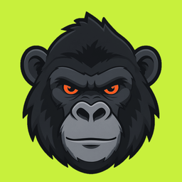

<!DOCTYPE html>
<html lang="en">
<head>
<meta charset="utf-8">
<meta name="viewport" content="width=device-width, initial-scale=1, viewport-fit=cover">
<meta name="theme-color" content="#0B0D10">
<link rel="manifest" href="manifest.webmanifest">
<link rel="apple-touch-icon" href="icons/apple-touch-icon.png">
<meta name="apple-mobile-web-app-capable" content="yes">
<meta name="apple-mobile-web-app-status-bar-style" content="black">
<meta name="apple-mobile-web-app-title" content="Beast Mode">
<title>Beast Mode</title>
<script>
/* Theme and accent before first paint, so a light-mode phone never flashes
   dark. Per phone, not per plan: bm2.prefs is never sent anywhere.

   "Auto" is resolved here into an explicit data-theme, so the stylesheet
   defines the light theme exactly once. applyPrefs() repeats this when the
   phone switches between light and dark while the app is open.

   iOS reads the status-bar style once, when a home-screen app launches, so
   it is set here, before that read: dark text on the light theme, light
   text on the dark one. */
(function () {
  var p = {};
  try { p = JSON.parse(localStorage.getItem("bm2.prefs") || "{}") || {}; } catch (e) {}
  var r = document.documentElement;
  // Dark unless the client chose light, or chose Auto on a light phone
  // (the design pass, 2026-09-24: black and volt is Beast Mode).
  var light = p.theme === "light" || (p.theme === "auto" &&
    !!(window.matchMedia && window.matchMedia("(prefers-color-scheme: light)").matches));
  r.setAttribute("data-theme", light ? "light" : "dark");
  if (p.accent === "ember" || p.accent === "arctic") r.setAttribute("data-accent", p.accent);
  var bar = document.querySelector('meta[name="apple-mobile-web-app-status-bar-style"]');
  if (bar) bar.setAttribute("content", light ? "default" : "black");
  var tc = document.querySelector('meta[name="theme-color"]');
  if (tc) tc.setAttribute("content", light ? "#F4F5F7" : "#0B0D10");
})();
</script>
<style>
/* ── fonts ───────────────────────────────────────────────────────────────
   Self-hosted so the app keeps its look offline. Inter for words, Barlow
   Condensed for numbers only. System fonts stand in if a file is missing. */
@font-face { font-family: 'Inter'; font-style: normal; font-weight: 400 700; font-display: swap;
  src: local('Inter'), url(fonts/inter-latin.woff2) format('woff2'); }
@font-face { font-family: 'Barlow Condensed'; font-style: normal; font-weight: 600; font-display: swap;
  src: url(fonts/barlow-condensed-600.woff2) format('woff2'); }
@font-face { font-family: 'Barlow Condensed'; font-style: normal; font-weight: 700; font-display: swap;
  src: url(fonts/barlow-condensed-700.woff2) format('woff2'); }

/* ── tokens ──────────────────────────────────────────────────────────────
   Every color is a token defined per theme. Nothing below names a hex value
   except the accents, so the light theme cannot drift from the dark one.
   Theme and accent are per phone, set in Profile, stored in bm2.prefs. */
/* Every text color passes 4.5:1 (WCAG AA) on --bg, --surface and --surface2
   in its theme. --text3 is the faintest and still clears it: check any
   change against all three surfaces, not just one. */
:root {
  --bg: #0B0D10; --surface: #15181D; --surface2: #1E2228; --line: #262B33;
  --text: #F4F5F7; --text2: #A0A8B4; --text3: #838B97;
  --warn: #F5A524; --bad: #E5484D; --bad-soft: #E5484D26;
  --scrim: rgba(0,0,0,.6); --shadow: none;
  color-scheme: dark;
}
:root[data-theme="light"] {
  --bg: #F4F5F7; --surface: #FFFFFF; --surface2: #EEF0F3; --line: #E2E5EA;
  --text: #0E1116; --text2: #525B67; --text3: #646C79;
  --warn: #B45309; --bad: #D93036; --bad-soft: #D930361A;
  --scrim: rgba(14,17,22,.4); --shadow: 0 1px 2px rgba(14,17,22,.06), 0 1px 1px rgba(14,17,22,.04);
  color-scheme: light;
}

/* Accent: --acc fills, --on-acc is text on a fill, --acc-ink is accent as text,
   --acc-line is accent as a thin graphic. Ink and line darken in light mode,
   where the bright fills would all but vanish against white. All three
   accents take dark text: white on Ember is only 3.1:1. */
:root, :root[data-accent="volt"] { --acc: #C8F03C; --on-acc: #0B0D10; --acc-ink: #C8F03C; --acc-soft: #C8F03C1F; }
:root[data-accent="ember"]  { --acc: #FF5A1F; --on-acc: #0B0D10; --acc-ink: #FF6A33; --acc-soft: #FF5A1F24; }
:root[data-accent="arctic"] { --acc: #3DD6F5; --on-acc: #0B0D10; --acc-ink: #3DD6F5; --acc-soft: #3DD6F524; }
:root { --acc-line: var(--acc); }
:root[data-theme="light"] { --acc-line: var(--acc-ink); }
:root[data-theme="light"], :root[data-theme="light"][data-accent="volt"] { --acc-ink: #4F6B00; }
:root[data-theme="light"][data-accent="ember"]  { --acc-ink: #C2410C; }
:root[data-theme="light"][data-accent="arctic"] { --acc-ink: #0E7490; }

/* ── base ────────────────────────────────────────────────────────────────── */
* { box-sizing: border-box; -webkit-tap-highlight-color: transparent; }
html { background: var(--bg); }
body {
  margin: 0; background: var(--bg); color: var(--text);
  font: 15px/1.45 Inter, -apple-system, BlinkMacSystemFont, "Segoe UI", system-ui, sans-serif;
  -webkit-font-smoothing: antialiased;
}
.num { font-family: "Barlow Condensed", Inter, sans-serif; font-variant-numeric: tabular-nums; }
h1, h2, h3 { margin: 0; font-weight: 700; letter-spacing: -.01em; }
p { margin: 0; }
ul { margin: 6px 0; padding-left: 20px; }
button { font: inherit; color: inherit; cursor: pointer; border: 0; background: none; padding: 0; }
input, select, textarea {
  font: inherit; font-size: 16px; background: var(--surface2); color: var(--text);
  border: 1px solid transparent; border-radius: 10px; padding: 11px 12px; width: 100%;
}
input:focus, select:focus, textarea:focus { outline: none; border-color: var(--acc-ink); }
input:disabled { opacity: .6; }
svg.i { width: 22px; height: 22px; fill: none; stroke: currentColor; stroke-width: 2; stroke-linecap: round; stroke-linejoin: round; flex: 0 0 auto; }

/* ── shell ─────────────────────────────────────────────────────────────── */
.wrap { max-width: 520px; margin: 0 auto; padding: 0 16px 104px; }
header { background: var(--bg); }
/* The top inset keeps the header clear of the notch on a home-screen iPhone. */
header .wrap { padding-top: calc(18px + env(safe-area-inset-top)); padding-bottom: 14px; }
.hrow { display: flex; align-items: center; gap: 12px; }
.badge { width: 44px; height: 44px; flex: 0 0 auto; display: block; }
.hwho { flex: 1; min-width: 0; }
.hsub { font-size: 12px; font-weight: 600; letter-spacing: .08em; text-transform: uppercase; color: var(--text3); }
.hname { font-size: 20px; font-weight: 700; letter-spacing: -.01em; line-height: 1.2; }

/* ── tabs ──────────────────────────────────────────────────────────────── */
nav {
  position: fixed; bottom: 0; left: 0; right: 0; z-index: 30;
  background: var(--bg);   /* Safari before 16.2 has no color-mix */
  background: color-mix(in srgb, var(--bg) 90%, transparent);
  -webkit-backdrop-filter: blur(16px); backdrop-filter: blur(16px);
  border-top: 1px solid var(--line); padding-bottom: env(safe-area-inset-bottom);
}
nav .in { max-width: 520px; margin: 0 auto; display: flex; }
nav button {
  flex: 1; color: var(--text3); padding: 9px 4px 10px; font-size: 11px; font-weight: 500;
  display: flex; flex-direction: column; align-items: center; gap: 3px;
}
nav button.active { color: var(--text); }
nav button.active svg { color: var(--acc-ink); }

/* ── summary ───────────────────────────────────────────────────────────── */
.summary {
  background: var(--surface); border: 1px solid var(--line); border-radius: 20px; box-shadow: var(--shadow);
  padding: 18px; display: grid; grid-template-columns: auto 1fr; gap: 18px; align-items: center;
}
.ring { width: 84px; height: 84px; position: relative; }
.ring svg { width: 100%; height: 100%; transform: rotate(-90deg); display: block; }
.ring .pct { position: absolute; inset: 0; display: grid; place-items: center; text-align: center; }
.ring .pct b { font-size: 30px; line-height: 1; font-weight: 700; }
.ring .pct span { display: block; font-size: 10px; color: var(--text3); font-weight: 600; letter-spacing: .06em; text-transform: uppercase; margin-top: 2px; }
.figs { display: flex; gap: 22px; }
.fig b { display: block; font-size: 30px; line-height: 1; font-weight: 700; }
.fig span { font-size: 12px; color: var(--text2); }
.rankline { grid-column: 1 / -1; width: 100%; text-align: left; }
.rankrow { display: flex; justify-content: space-between; gap: 10px; font-size: 13px; margin-bottom: 8px; }
.rankrow b { font-weight: 600; }
.rankrow span { color: var(--text2); }
.bar { height: 6px; background: var(--surface2); border-radius: 3px; overflow: hidden; }
.bar i { display: block; height: 100%; background: var(--acc-line); border-radius: 3px; }

.toward {
  display: flex; align-items: center; gap: 10px; margin-top: 10px; padding: 12px 14px; width: 100%; text-align: left;
  border-radius: 14px; background: var(--surface); border: 1px solid var(--line); box-shadow: var(--shadow); font-size: 14px;
}
.toward .lbl { color: var(--text3); font-size: 12px; font-weight: 600; flex: 0 0 auto; }
.toward .g { flex: 1; min-width: 0; white-space: nowrap; overflow: hidden; text-overflow: ellipsis; }
.toward .more { color: var(--text3); font-size: 13px; }

/* ── cards and prompts ─────────────────────────────────────────────────── */
.card {
  background: var(--surface); border: 1px solid var(--line); border-radius: 16px; box-shadow: var(--shadow);
  padding: 16px; margin-bottom: 12px;
}
.card h3 { font-size: 13px; font-weight: 600; color: var(--text2); text-transform: uppercase; letter-spacing: .08em; margin-bottom: 12px; }
.imeta { font-size: 13px; color: var(--text2); }
.inotes { font-size: 13px; color: var(--text3); margin-top: 4px; }

.prompt {
  margin-top: 10px; padding: 14px; border-radius: 14px; border: 1px solid var(--line);
  background: var(--surface); box-shadow: var(--shadow); display: flex; gap: 12px; align-items: flex-start;
}
.prompt > svg { margin-top: 1px; color: var(--acc-ink); width: 20px; height: 20px; }
.prompt .txt { flex: 1; min-width: 0; font-size: 14px; color: var(--text2); }
.prompt .txt b { color: var(--text); font-weight: 600; display: block; margin-bottom: 2px; }
.prompt .acts { display: flex; gap: 8px; margin-top: 10px; }

.btn { background: var(--acc); color: var(--on-acc); padding: 14px; width: 100%; font-weight: 600; border-radius: 12px; margin-top: 12px; }
.btn.sec, .btn.quiet { background: var(--surface2); color: var(--text); }
.btn.danger { background: var(--bad-soft); color: var(--bad); }
.btn:disabled { opacity: .5; }
.pbtn { background: var(--acc); color: var(--on-acc); font-weight: 600; font-size: 14px; padding: 9px 16px; border-radius: 10px; }
.gbtn { color: var(--text2); font-weight: 500; font-size: 14px; padding: 9px 12px; border-radius: 10px; }

.seg { display: flex; background: var(--surface2); border-radius: 10px; padding: 3px; gap: 3px; }
.seg button { flex: 1; padding: 8px 6px; border-radius: 8px; font-size: 14px; font-weight: 500; color: var(--text2); }
.seg button.on { background: var(--line); color: var(--text); font-weight: 600; box-shadow: var(--shadow); }
:root[data-theme="light"] .seg button.on { background: var(--surface); }
.swatches { display: flex; gap: 12px; }
.swatch { display: flex; flex-direction: column; align-items: center; gap: 6px; font-size: 12px; color: var(--text2); flex: 1; padding: 8px 0; border-radius: 12px; border: 2px solid transparent; }
.swatch i { width: 30px; height: 30px; border-radius: 50%; display: block; }
.swatch.on { border-color: var(--text3); color: var(--text); font-weight: 600; }

/* ── checklist ─────────────────────────────────────────────────────────── */
.group-label { display: flex; justify-content: space-between; align-items: baseline; margin: 26px 2px 10px; }
.group-label b { font-size: 13px; font-weight: 600; letter-spacing: .08em; text-transform: uppercase; color: var(--text2); }
.group-label span { font-size: 12px; color: var(--text3); }
.list { background: var(--surface); border: 1px solid var(--line); border-radius: 16px; overflow: hidden; box-shadow: var(--shadow); }
.list + .list { margin-top: 10px; }
.item + .item { border-top: 1px solid var(--line); }
.irow { display: flex; gap: 14px; align-items: flex-start; padding: 14px; width: 100%; text-align: left; }
.tick {
  width: 26px; height: 26px; border-radius: 50%; border: 2px solid var(--text3); flex: 0 0 auto;
  display: grid; place-items: center; margin-top: 1px; color: var(--on-acc);
  transition: background .15s, border-color .15s;
}
.tick svg { width: 14px; height: 14px; stroke-width: 3.2; opacity: 0; transition: opacity .15s; }
.item.done .tick { background: var(--acc); border-color: var(--acc); }
.item.done .tick svg { opacity: 1; }
.ibody { flex: 1; min-width: 0; }
.iname { font-weight: 600; font-size: 15px; line-height: 1.35; }
.item.done .iname { color: var(--text3); text-decoration: line-through; text-decoration-color: var(--text3); }
.key { display: inline-block; width: 7px; height: 7px; border-radius: 50%; background: var(--acc-line); margin-left: 7px; vertical-align: 2px; }
.imeta2 { font-size: 13px; color: var(--text2); margin-top: 1px; }
.iright { flex: 0 0 auto; text-align: right; font-size: 15px; font-weight: 600; color: var(--text3); margin-top: 1px; }
.iright.soon { color: var(--warn); }
.iright.stamp { font-size: 12px; color: var(--acc-ink); margin-top: 4px; }
.iright.late { font-size: 12px; color: var(--warn); margin-top: 4px; }
/* Tap targets are at least 44px tall, the size a thumb can hit reliably. */
.logbtn { font-size: 13px; font-weight: 600; color: var(--acc-ink); margin: -12px 0 2px 54px; min-height: 44px; padding: 0 12px 0 0; display: inline-flex; align-items: center; }
.values { padding: 0 14px 16px 54px; }
.values .fields { display: grid; grid-template-columns: repeat(auto-fit, minmax(70px, 1fr)); gap: 8px; }
.values label { font-size: 11px; font-weight: 600; color: var(--text3); letter-spacing: .04em; text-transform: uppercase; }
.values input {
  margin-top: 4px; font: 600 20px/1 "Barlow Condensed", Inter, sans-serif; font-variant-numeric: tabular-nums;
  text-align: center; padding: 10px 4px;
}
.values .acts { display: flex; gap: 8px; margin-top: 12px; }
.values .acts .pbtn { flex: 1; }
.legend { display: flex; align-items: center; gap: 7px; font-size: 12px; color: var(--text3); margin: 14px 2px 0; }
.legend .key { margin: 0; vertical-align: 0; }
.legend { flex-wrap: wrap; text-align: left; }
.legend u { color: var(--acc-ink); text-decoration: none; font-weight: 600; }

.empty { text-align: center; color: var(--text2); padding: 40px 16px; }
.empty .big { display: grid; place-items: center; margin-bottom: 14px; color: var(--acc-ink); }
.empty .big svg { width: 44px; height: 44px; stroke-width: 1.6; }
/* The mark is the app icon itself, a volt tile, so it reads on black and on
   light alike, and is the thing clients tap on their home screen. */
.gmark { width: 96px; height: 96px; border-radius: 22px; display: block; }
.gmark.sm { width: 42px; height: 42px; border-radius: 10px; }
.empty h2 { color: var(--text); font-size: 22px; margin-bottom: 8px; }
/* The condensed face, sized to the screen, wrapping to balanced lines
   where a heading is too long for one (the install screen's are). */
.empty h2.fit { font-family: "Barlow Condensed", Inter, sans-serif; font-size: min(7.4vw, 30px); letter-spacing: 0; line-height: 1.1; text-wrap: balance; }
.empty a { color: var(--acc-ink); text-decoration: underline; text-underline-offset: 2px; }
.steps { text-align: left; margin: 16px auto 12px; max-width: 320px; }
.step { display: flex; align-items: center; gap: 10px; padding: 8px 12px; margin-bottom: 6px; background: var(--surface); border-radius: 12px; }
.step .n { flex: none; width: 20px; color: var(--text3); font-size: 13px; font-weight: 700; text-align: center; }
.step .ico { flex: none; width: 38px; height: 38px; display: grid; place-items: center; background: var(--surface2); border-radius: 10px; color: var(--acc-ink); }
.step .ico svg { width: 24px; height: 24px; }
.step .ico.raw { background: none; width: auto; min-width: 38px; }
/* Apple's blue Add button, in Beast Mode's colour. */
.addpill { display: inline-block; background: var(--acc); color: var(--on-acc); font-weight: 700; font-size: 10px; letter-spacing: .2px; padding: 3px 8px; border-radius: 999px; }
.step .txt { color: var(--text); font-size: 14px; line-height: 1.35; }
.step .txt b { display: block; font-weight: 600; }
.step .txt span { display: block; color: var(--text3); font-size: 12px; margin-top: 1px; }
.inline-icon { width: 17px; height: 17px; vertical-align: -3px; margin: 0 1px; color: var(--acc-ink); }

/* ── week ──────────────────────────────────────────────────────────────── */
.daypick { display: flex; gap: 5px; margin: 4px 0 8px; }
.daypick button {
  flex: 1; background: var(--surface); border: 1px solid var(--line); border-radius: 12px; color: var(--text3);
  padding: 8px 2px; font-size: 11px; font-weight: 500; line-height: 1.3; position: relative;
}
.daypick button .dn { display: block; font: 700 19px/1.2 "Barlow Condensed", Inter, sans-serif; color: var(--text); }
.daypick button.sel { border-color: var(--text); }
.daypick button.closed::after, .daypick button.broken::after {
  content: ''; position: absolute; left: 50%; bottom: 5px; width: 5px; height: 5px; margin-left: -2.5px; border-radius: 50%;
}
.daypick button.closed::after { background: var(--acc-line); }
.daypick button.broken::after { background: var(--bad); }
.daypick button.future { opacity: .45; }

.weekgrid { width: 100%; border-collapse: collapse; font-size: 14px; margin: 4px 0 18px; background: var(--surface); border-radius: 16px; overflow: hidden; box-shadow: var(--shadow); }
.weekgrid th { font-size: 11px; color: var(--text3); text-transform: uppercase; letter-spacing: .06em; padding: 10px 4px; font-weight: 600; }
.weekgrid th.nm, .weekgrid td.nm { text-align: left; max-width: 240px; padding-left: 14px; }
.weekgrid td { padding: 6px 4px; border-top: 1px solid var(--line); text-align: center; }
/* A 44px hit area around a 30px circle: easy to tap, same look. */
.weekgrid .cell {
  width: 44px; height: 44px; position: relative; color: transparent;
  margin: 0 auto; display: grid; place-items: center; cursor: pointer;
}
.weekgrid .cell::before {
  content: ""; position: absolute; inset: 7px; border-radius: 50%; border: 2px solid var(--line);
}
.weekgrid .cell svg { width: 14px; height: 14px; stroke-width: 3.2; position: relative; }
.weekgrid .cell.done { color: var(--on-acc); }
.weekgrid .cell.done::before { background: var(--acc); border-color: var(--acc); }
.weekgrid .cell.off { cursor: default; }
.weekgrid .cell.off::before { border: 0; }
.weekgrid .cell.future { cursor: default; opacity: .5; }
.weekgrid .cell.future::before { border-style: dashed; }

/* ── goals ─────────────────────────────────────────────────────────────── */
.goal { display: flex; gap: 12px; align-items: flex-start; padding: 8px 0; cursor: pointer; width: 100%; text-align: left; }
.goal .tick { width: 22px; height: 22px; }
.goal .tick svg { width: 12px; height: 12px; }
.goal.done .tick { background: var(--acc); border-color: var(--acc); }
.goal.done .tick svg { opacity: 1; }
.goal.done .gtext { color: var(--text3); text-decoration: line-through; }
.goal .imeta { text-decoration: none; }
.term { font-size: 12px; font-weight: 600; letter-spacing: .08em; text-transform: uppercase; color: var(--text3); margin: 18px 0 6px; }
.stats-list { display: grid; grid-template-columns: 1fr 1fr; gap: 14px 12px; }
.stats-list b { display: block; font: 700 26px/1 "Barlow Condensed", Inter, sans-serif; font-variant-numeric: tabular-nums; }
.stats-list span { font-size: 12px; color: var(--text2); }

/* ── the welcome screen ────────────────────────────────────────────────── */
.welcome { padding-top: calc(28px + env(safe-area-inset-top)); padding-bottom: 40px; }
.wtitle { text-align: center; font: 700 34px/1.05 "Barlow Condensed", Inter, sans-serif; letter-spacing: -.01em; }
.wtitle span { color: var(--acc-ink); }
.wtag { text-align: center; font-weight: 600; margin: 4px 0 16px; }
.wintro { color: var(--text2); font-size: 14px; margin: 0 0 8px; }
.wfeat { display: flex; gap: 12px; align-items: flex-start; padding: 10px 0; }
.wfeat + .wfeat { border-top: 1px solid var(--line); }
.wfeat svg.i { color: var(--acc-ink); margin-top: 2px; }
.wfeat b { display: block; font-size: 15px; }
.wfeat span { font-size: 13px; color: var(--text2); }
.wsub { font-size: 12px; font-weight: 600; letter-spacing: .08em; text-transform: uppercase; color: var(--text3); margin: 22px 0 8px; }
.wqs { background: var(--surface); border: 1px solid var(--line); border-radius: 16px; overflow: hidden; box-shadow: var(--shadow); }
.wq { padding: 13px 14px; }
.wq + .wq { border-top: 1px solid var(--line); }
.wq b { display: block; font-size: 14px; font-weight: 600; margin-bottom: 1px; }
.wq p { margin: 0 0 10px; font-size: 13px; color: var(--text2); line-height: 1.4; }
.pair { display: grid; grid-template-columns: 1fr 1fr; gap: 8px; }
.pair button { padding: 11px 8px; border-radius: 10px; border: 1px solid var(--line); background: var(--surface2); color: var(--text); font-size: 14px; font-weight: 600; min-height: 44px; }
.pair button.picked { background: var(--acc); color: var(--on-acc); border-color: var(--acc); }
.btn.wait { opacity: .45; }

/* ── sheets ────────────────────────────────────────────────────────────── */
/* A sheet taller than the screen scrolls from its top; margin-top:auto keeps
   short sheets pinned to the bottom without cutting off tall ones. */
.modal {
  position: fixed; inset: 0; z-index: 60; background: var(--scrim);
  display: flex; flex-direction: column; align-items: center; overflow-y: auto; padding-top: 40px;
}
.modal > div {
  background: var(--surface); border-radius: 22px 22px 0 0; padding: 24px 20px calc(24px + env(safe-area-inset-bottom));
  max-width: 520px; width: 100%; margin-top: auto;
}
.rules { margin-top: 20px; border-top: 1px solid var(--line); }
.rule { padding: 14px 0; border-bottom: 1px solid var(--line); }
.rule b { display: flex; align-items: center; gap: 7px; font-weight: 600; margin-bottom: 3px; }
.rule b .key { margin: 0; vertical-align: 0; }
.rule p { font-size: 14px; color: var(--text2); }
.modal.center { align-items: center; padding: 18px; }
.modal.center > div { border-radius: 22px; margin: auto 0; }
.modal h2 { font-size: 20px; margin-bottom: 6px; }
.modal p { color: var(--text2); font-size: 14px; }

.field { margin-bottom: 14px; }
.field label { display: block; font-size: 13px; font-weight: 500; color: var(--text2); margin-bottom: 6px; }

.ladder { display: grid; gap: 4px; margin-top: 16px; }
.rung { display: flex; align-items: center; gap: 14px; padding: 8px 8px; border-radius: 12px; }
.rung.cur { background: var(--surface2); }
.rung .badge { width: 40px; height: 40px; }
.rung b { font-weight: 600; display: block; }
.rung span { font-size: 13px; color: var(--text2); }
.rung.locked { opacity: .45; }

.install {
  background: var(--surface); border: 1px solid var(--line); border-radius: 14px; box-shadow: var(--shadow);
  padding: 12px 14px; margin: 0 0 10px; display: flex; gap: 12px; align-items: center;
}
.install > svg { color: var(--acc-ink); }
.install .txt { flex: 1; min-width: 0; font-size: 13px; color: var(--text2); }
.install .txt b { display: block; font-size: 15px; color: var(--text); margin-bottom: 1px; }
.install .x { color: var(--text3); padding: 6px; }

/* ── coach ─────────────────────────────────────────────────────────────── */
.coachlog { padding: 4px 0 90px; display: flex; flex-direction: column; gap: 9px; }
.bubble {
  max-width: 86%; padding: 11px 14px; border-radius: 18px; font-size: 15px;
  line-height: 1.45; white-space: pre-wrap; word-wrap: break-word;
}
.bubble.me { align-self: flex-end; background: var(--acc); color: var(--on-acc); border-bottom-right-radius: 6px; }
.bubble.coach { align-self: flex-start; background: var(--surface); border: 1px solid var(--line); border-bottom-left-radius: 6px; }
.bubble.err { align-self: flex-start; background: var(--bad-soft); color: var(--bad); font-size: 14px; }
.bubble.thinking { color: var(--text2); }
.bubble.thinking::after {
  content: '...'; display: inline-block; width: 1em; text-align: left;
  animation: dots 1.2s steps(4, end) infinite;
}
@keyframes dots { 0% { content: ''; } 25% { content: '.'; } 50% { content: '..'; } 75% { content: '...'; } }
.coachhead { display: flex; align-items: center; gap: 12px; padding: 4px 0 14px; }
.coachhead b { display: block; font-size: 16px; }
.coachhead span { font-size: 13px; color: var(--text2); }
.starters { display: flex; flex-direction: column; gap: 8px; margin-top: 8px; }
.starters button {
  text-align: left; padding: 12px 14px; border-radius: 14px; background: var(--surface);
  border: 1px solid var(--line); font-size: 14px; box-shadow: var(--shadow);
}
.coachbar {
  position: fixed; left: 0; right: 0; z-index: 25;
  bottom: var(--nav-h, 62px);   /* measured from the tab bar after each render */
  background: var(--bg);
  background: color-mix(in srgb, var(--bg) 92%, transparent);
  -webkit-backdrop-filter: blur(16px); backdrop-filter: blur(16px);
}
.coachbar .in { max-width: 520px; margin: 0 auto; padding: 10px 16px; display: flex; gap: 8px; align-items: flex-end; }
.coachbar textarea { flex: 1; resize: none; max-height: 120px; border-radius: 22px; padding: 11px 16px; border: 1px solid var(--line); background: var(--surface); }
.coachbar .send { width: 44px; height: 44px; border-radius: 50%; background: var(--acc); color: var(--on-acc); display: grid; place-items: center; flex: 0 0 auto; }
.coachbar .send:disabled { opacity: .5; }
.linkbtn { font-size: 13px; color: var(--text3); padding: 0 12px; min-height: 44px; }

.toast {
  position: fixed; left: 50%; bottom: calc(84px + env(safe-area-inset-bottom)); transform: translate(-50%, 8px);
  background: var(--text); color: var(--bg); font-weight: 600; font-size: 14px;
  padding: 10px 18px; border-radius: 999px; z-index: 70; opacity: 0;
  transition: opacity .2s, transform .2s; pointer-events: none;
  /* Wraps rather than running off a small phone's edges. */
  width: max-content; max-width: calc(100vw - 32px); text-align: center; line-height: 1.35;
}
.toast.show { opacity: 1; transform: translate(-50%, 0); }

.confetti { position: fixed; inset: 0; z-index: 80; pointer-events: none; overflow: hidden; }
.confetti i { position: absolute; width: 8px; height: 8px; top: -14px; border-radius: 2px; animation: fall 2.4s cubic-bezier(.3,.6,.6,1) forwards; }
@keyframes fall { to { transform: translateY(105vh) rotate(540deg); opacity: 0; } }

@media (min-width: 769px) { .daypick { display: none; } }
@media (max-width: 768px) { .weekgrid { display: none; } }
@media (prefers-reduced-motion: reduce) { .confetti { display: none; } * { transition: none !important; } }
.introlist { margin: 12px 0 18px 18px; font-size: 15px; line-height: 1.5; color: var(--text); }
.introlist li { margin-bottom: 6px; }
.revsec { background: var(--surface); border: 1px solid var(--line); border-radius: 14px; padding: 12px 14px; margin-bottom: 10px; }
.revhead { display: flex; align-items: baseline; justify-content: space-between; margin-bottom: 6px; }
.revhead h3 { font-size: 13px; font-weight: 600; text-transform: uppercase; letter-spacing: .06em; color: var(--text2); }
.lnk { background: none; border: 0; color: var(--acc-ink, var(--acc)); font-weight: 600; font-size: 14px; padding: 4px 0; }
.ans { display: flex; flex-direction: column; padding: 6px 0; border-top: 1px solid var(--line); }
.ans span { font-size: 12px; color: var(--text2); }
.ans b { font-weight: 500; font-size: 15px; white-space: pre-wrap; }
.example { background: var(--surface2); border-radius: 10px; padding: 10px 12px; margin: 0 0 14px; font-size: 13px; line-height: 1.5; color: var(--text2); }
.field input::placeholder, .field textarea::placeholder { color: var(--text3); opacity: 1; font-weight: 400; }
.example b { display: block; font-size: 11px; text-transform: uppercase; letter-spacing: .06em; color: var(--text3); margin-bottom: 2px; }
/* The goals page's band (Chris, 2026-09-23): the one dark thing on the
   page, the quote in the accent on it. The same near-black in both themes,
   with an accent rule under it so it still reads as a band on a dark card. */
.card.featured { border: 2px solid #0B0D10; }
/* The end of the intake: the same band, a badge, and what comes next. */
.card.done { text-align: center; border: 2px solid #0B0D10; }
.card.done .big { display: grid; place-items: center; margin: 6px 0 10px; }
.card.done h2 { font-size: 24px; margin-bottom: 8px; }
.card.done p { color: var(--text2); font-size: 15px; line-height: 1.5; }
/* What happens next is the point of this screen (Chris, 2026-09-23: it has
   to read on a phone), so it is the big type here, not the small print. */
.card.done h3 { font-family: "Barlow Condensed", Inter, sans-serif; font-size: 26px; font-weight: 700; text-transform: uppercase;
  letter-spacing: .01em; color: var(--text); margin: 14px 0 12px; }
.card.done .next { text-align: left; margin: 0 0 20px; padding: 0; list-style: none; font-size: 17px; line-height: 1.4; color: var(--text2); }
.card.done .next li { display: flex; gap: 12px; align-items: flex-start; margin-bottom: 14px; }
.card.done .next li svg { flex: 0 0 auto; width: 24px; height: 24px; margin-top: 1px; color: var(--acc-ink); stroke-width: 2.2; }
.card.done .next b { color: var(--text); font-weight: 600; }
:root:not([data-theme="light"]) .card.done { border-color: var(--acc); }
/* The level-up's badges (step 5): a pill each, the accent's soft fill. */
.starts { display: flex; flex-wrap: wrap; gap: 8px; justify-content: center; margin: 4px 0 6px; }
.starts .st { display: inline-flex; align-items: center; gap: 9px; padding: 5px 15px 5px 5px; border-radius: 999px;
  background: var(--acc-soft); border: 1px solid var(--acc); font-weight: 600; font-size: 14px; color: var(--text); }
.starts .st .medal { width: 32px; height: 32px; flex: 0 0 auto; }
.card.done .lead, .card.featured .lead { margin: -16px -16px 14px; padding: 14px 16px; background: #0B0D10; color: var(--acc); text-align: center;
  font: 700 19px/1.15 "Barlow Condensed", Inter, sans-serif; text-transform: uppercase; letter-spacing: .03em; white-space: nowrap; border-radius: 14px 14px 0 0;
  border-bottom: 2px solid var(--acc); }
:root:not([data-theme="light"]) .card.featured { border-color: var(--acc); }
/* A section heading that is a sentence: the display font, one line, sized
   to fit a phone. The text colour, so it is black on the light card. */
.card h2.condensed { font: 700 18px/1.1 "Barlow Condensed", Inter, sans-serif; letter-spacing: 0; white-space: nowrap; overflow: hidden; text-overflow: ellipsis; color: var(--text); margin-bottom: 6px; }
.revsec.featured { border: 2px solid var(--acc); }
.revsec.featured h3 { color: var(--acc-ink); }

/* ── the design pass: loud (Chris, 2026-09-24) ─────────────────────────────
   Black and volt, the condensed face for everything that is a headline or a
   number, chunkier icons, one big primary button. Style only: nothing here
   changes what a screen does. Last in the sheet so it wins over the above. */
:root { --display: "Barlow Condensed", Inter, sans-serif; --band: #0B0D10; --band-text: #FFFFFF; }
svg.i { stroke-width: 2.4; }

/* The header is a black band in both themes: the light theme's punch. */
header { background: var(--band); color: var(--band-text); }
header .wrap { padding-bottom: 16px; }

header .hsub { color: rgba(255,255,255,.55); font-size: 11px; }
header .hname { font: 700 30px/1 var(--display); text-transform: uppercase; letter-spacing: .01em; color: var(--band-text); margin-top: 2px;
  white-space: nowrap; overflow: hidden; text-overflow: ellipsis; }
.hrank .badge { width: 46px; height: 46px; }

/* The day's numbers: the display face, big. */
.summary { margin-top: 16px; border-radius: 20px; }
.ring { width: 92px; height: 92px; }
.ring .pct b, .fig b { font-family: var(--display); font-weight: 700; letter-spacing: 0; }
.ring .pct b { font-size: 36px; }
.fig b { font-size: 44px; }
.fig span, .ring .pct span { text-transform: uppercase; letter-spacing: .08em; font-size: 11px; font-weight: 600; color: var(--text2); }
.rankrow b { font: 700 20px/1 var(--display); text-transform: uppercase; letter-spacing: .02em; }
.rankrow span { font-size: 13px; align-self: flex-end; }
.bar { height: 10px; border-radius: 5px; }
.bar i { background: var(--acc-line); border-radius: 5px; }

/* Headings: the display face, full colour, a volt edge on the day's groups. */
.card h3 { font: 700 20px/1.1 var(--display); letter-spacing: .02em; color: var(--text); }
.group-label { margin: 28px 2px 10px; }
.group-label b { font: 700 22px/1 var(--display); letter-spacing: .02em; color: var(--text); padding-left: 12px; position: relative; }
.group-label b::before { content: ""; position: absolute; left: 0; top: 1px; bottom: 1px; width: 4px; border-radius: 2px; background: var(--acc-line); }
.group-label span { font-size: 12px; font-weight: 600; text-transform: uppercase; letter-spacing: .06em; }

/* The checklist: bigger ticks, heavier names. */
.tick { width: 30px; height: 30px; border-width: 2.5px; }
.tick svg { width: 16px; height: 16px; }
.iname { font-size: 16px; font-weight: 700; }

/* One primary action: condensed, capitals, full volt. Secondary stays quiet. */
.btn:not(.sec):not(.quiet):not(.danger) { font: 700 21px/1 var(--display); text-transform: uppercase; letter-spacing: .04em; padding: 17px 14px; border-radius: 14px; }
.btn.sec, .btn.quiet { font-weight: 600; }

/* Today's smaller pieces: the goal line and the prompts. */
.toward .lbl { font: 700 15px/1 var(--display); text-transform: uppercase; letter-spacing: .04em; color: var(--acc-ink); }
.toward .g { font-weight: 600; }
.prompt .txt b { font: 700 19px/1.1 var(--display); letter-spacing: .01em; margin-bottom: 4px; }
.prompt > svg { width: 22px; height: 22px; }

/* Week: the day letters and the stats in the display face. */
.weekgrid th { font: 700 14px/1 var(--display); letter-spacing: .04em; color: var(--text2); }
.weekgrid .cell svg { stroke-width: 3.4; }
.stats-list b { font-size: 34px; }
.stats-list span { text-transform: uppercase; letter-spacing: .06em; font-size: 11px; font-weight: 600; }

/* Goals: heavier text. */
.goal .gtext { font-weight: 600; }

/* Sheets (ranks, confirmations): the title in the display face. */
.modal h2 { font: 700 30px/1.05 var(--display); text-transform: uppercase; letter-spacing: .01em; }
.rung b { font: 700 20px/1 var(--display); text-transform: uppercase; letter-spacing: .02em; }

/* The Brofessor has his own face, never the Beast Mode gorilla (Chris, 2026-09-24):
   his artwork, head and lab coat, ringed in the accent. */
.crow { display: flex; gap: 8px; align-items: flex-end; align-self: flex-start; max-width: 92%; }
.crow .bubble { max-width: none; min-width: 0; }
.bro.sm { width: 30px; height: 30px; border-radius: 50%; border: 1.5px solid var(--acc); flex: 0 0 auto; background: #0B0D10; }
.coachhead .bro { width: 54px; height: 54px; border-radius: 50%; border: 2px solid var(--acc); flex: 0 0 auto; object-fit: cover; background: #0B0D10; }

/* Your goals, the last screen before the plan: a band across the top, the
   logo centred, the goals ticked in volt. */
.agree > div { text-align: center; border: 2px solid #0B0D10; overflow: hidden; }
:root:not([data-theme="light"]) .agree > div { border-color: var(--acc); }
.agree .lead { margin: -24px -20px 18px; padding: 14px 16px; background: var(--band); color: var(--acc);
  font: 700 20px/1 var(--display); text-transform: uppercase; letter-spacing: .04em; }
.agree .amark { display: grid; place-items: center; margin-bottom: 12px; }
.agree .amark .gmark { width: 112px; height: 112px; border-radius: 26px; box-shadow: 0 6px 24px rgba(0,0,0,.35); }
.agree h2 { font-size: 40px; margin-bottom: 4px; }
.agree .asub { font-size: 15px; }
.agree .term { font: 700 18px/1 var(--display); text-transform: uppercase; letter-spacing: .04em; color: var(--acc-ink); margin: 22px 0 8px; }
.agoals { list-style: none; padding: 0; margin: 0; text-align: left; display: grid; gap: 8px; }
.agoals li { display: flex; gap: 10px; align-items: flex-start; background: var(--surface2); border-radius: 12px; padding: 12px; font-weight: 600; font-size: 15px; }
.agoals li svg { width: 20px; height: 20px; color: var(--acc-ink); flex: 0 0 auto; margin-top: 1px; stroke-width: 3; }
.coachhead b { font: 700 22px/1 var(--display); text-transform: uppercase; letter-spacing: .02em; display: block; margin-bottom: 3px; }
.bubble { font-size: 15px; }

/* The welcome: a bigger title, section labels as headings. */
.wtitle { font-size: 42px; text-transform: uppercase; letter-spacing: 0; }
.wtag { font-size: 16px; }
.wfeat b { font-size: 16px; font-weight: 700; }
.wfeat svg.i { width: 26px; height: 26px; }
.wsub { font: 700 22px/1 var(--display); letter-spacing: .02em; color: var(--text); text-transform: uppercase; }

/* The intake: each page's title in the display face. */
.sectitle { font: 700 30px/1.05 var(--display); text-transform: uppercase; letter-spacing: .01em; margin-bottom: 6px; }
.revhead h3 { font: 700 20px/1.1 var(--display); text-transform: uppercase; letter-spacing: .02em; }
.empty h2 { font: 700 30px/1.05 var(--display); text-transform: uppercase; letter-spacing: .01em; }

/* The tab bar: the active tab carries the volt. */
nav button { font-size: 11px; font-weight: 600; }
nav button.active { color: var(--text); }
nav button.active svg { color: var(--acc-ink); stroke-width: 2.6; }
</style>
</head>
<body>

<div id="root"></div>
<div id="sheet"></div>
<div id="toast" class="toast"></div>

<script src="lz-string.min.js"></script>
<script src="beast-core.js"></script>
<script>
'use strict';

/* Beast Mode client app.

   All contract logic lives in BeastCore: log keys, scoring, metric names,
   timings, frequencies and payload prefixes are never written inline here.
   See CLAUDE.md. */

var BUILT_AGAINST = '2.15.0';
var KEY = 'bm2.client';

/* ── icons and badges ──────────────────────────────────────────────────── */

// One line style for every icon, drawn in currentColor so they follow the theme.
var ICONS = {
  today:   '<circle cx="12" cy="12" r="9"/><path d="m8 12 3 3 5-6"/>',
  // A dumbbell: two plates each end, a bar between. The bullet on the Got it screen.
  dumbbell: '<path d="M2 10.5v3M5 8v8M8 6v12M16 6v12M19 8v8M22 10.5v3M8 12h8"/>',
  week:    '<rect x="3" y="4" width="18" height="17" rx="3"/><path d="M3 9h18M8 2v4M16 2v4"/>',
  coach:   '<path d="M21 12a8 8 0 0 1-11.8 7L4 20l1.1-4.6A8 8 0 1 1 21 12Z"/>',
  profile: '<circle cx="12" cy="8" r="4"/><path d="M4 21a8 8 0 0 1 16 0"/>',
  check:   '<path d="m5 12.5 4.5 4.5L19 7.5"/>',
  bell:    '<path d="M6 8a6 6 0 0 1 12 0c0 7 3 9 3 9H3s3-2 3-9"/><path d="M10.3 21a1.94 1.94 0 0 0 3.4 0"/>',
  phone:   '<rect x="6" y="2" width="12" height="20" rx="3"/><path d="M11 18h2"/>',
  x:       '<path d="M6 6l12 12M18 6 6 18"/>',
  send:    '<path d="M12 19V5M5 12l7-7 7 7"/>',
  // The four things an iPhone client has to press, drawn as they look in
  // Safari, so the words are not the only thing to go on.
  // Drawn from Chris's own iPhone, 2026-09-22, so a client is looking for the
  // shape they can see: the toolbar's dots button, Apple's share square, the
  // share sheet's View More chevron, and Add to Home Screen's plus.
  share:   '<path d="M12 14.5V3.2"/><path d="M8.6 6.6 12 3.2l3.4 3.4"/><path d="M8 9.5H6.6A2.1 2.1 0 0 0 4.5 11.6v7.3a2.1 2.1 0 0 0 2.1 2.1h10.8a2.1 2.1 0 0 0 2.1-2.1v-7.3a2.1 2.1 0 0 0-2.1-2.1H16"/>',
  dots:    '<circle cx="12" cy="12" r="9.3"/><circle cx="7.6" cy="12" r="1.35" fill="currentColor" stroke="none"/><circle cx="12" cy="12" r="1.35" fill="currentColor" stroke="none"/><circle cx="16.4" cy="12" r="1.35" fill="currentColor" stroke="none"/>',
  more:    '<circle cx="12" cy="12" r="9.3"/><path d="M8.2 10.3 12 14.1l3.8-3.8"/>',
  addhome: '<rect x="3.4" y="3.4" width="17.2" height="17.2" rx="4.6"/><path d="M12 8.4v7.2M8.4 12h7.2"/>',
  moon:    '<path d="M20 14.5A8 8 0 0 1 9.5 4 8 8 0 1 0 20 14.5Z"/>',
  refresh: '<path d="M20 11a8 8 0 1 0-2.3 5.7M20 4v7h-7"/>',
  link:    '<path d="M10 14a5 5 0 0 0 7 0l3-3a5 5 0 0 0-7-7l-1 1"/><path d="M14 10a5 5 0 0 0-7 0l-3 3a5 5 0 0 0 7 7l1-1"/>',
  plan:    '<rect x="6" y="4" width="12" height="17" rx="2"/><path d="M9 4h6v3H9zM9 12h6M9 16h4"/>',
  fire:    '<path d="M12 22a7 7 0 0 0 7-7c0-4-3-6-4-9-1 2-2 3-3 3 0-3-1-5-3-7-1 4-4 6-4 13a7 7 0 0 0 7 7Z"/>'
};
function icon(name, extra) {
  return '<svg class="i" viewBox="0 0 24 24" aria-hidden="true"' + (extra || '') + '>' + ICONS[name] + '</svg>';
}

// The Beast Mode gorilla (Chris's artwork in the app's colours, 2026-09-24):
// the brand wherever the app speaks for itself. Never a rank, never The
// Brofessor.
// `alt` is empty where the words beside it already say who this is.
function mark(size, alt) {
  return '';
}

/* The rank badges (design pass, Chris 2026-09-24): hexagon medals, each rank
   earning more. Lil Bro grey with one chevron; Bro a volt frame, two; Bro Bro
   a double frame, three; Broton Beam solid volt with rays and a star; Chief
   Brologist black with an Ember frame and crown. Fixed brand colours: they
   are artwork, the same whatever accent a client picks. Levels 1 to 5. */
var BADGE = { volt: '#C8F03C', ember: '#FF5A1F', dark: '#16191E', grey: '#8A919C', black: '#0B0D10', ray: '#A9CC2E' };
var HEX = 'M32 3 57 17.5v29L32 61 7 46.5v-29z', HEX_IN = 'M32 8.5 52.2 20.2v23.6L32 55.5 11.8 43.8V20.2z';
var badgeClips = 0;
function chevrons(n, color) {
  var ys = n === 1 ? [36] : n === 2 ? [30, 40] : [26, 35, 44];
  return ys.map(function (y) {
    return '<path d="M20 ' + y + ' 32 ' + (y - 9) + ' 44 ' + y + '" fill="none" stroke="' + color + '" stroke-width="5" stroke-linecap="round" stroke-linejoin="round"/>';
  }).join('');
}

function badge(level, cls) {
  var B = BADGE, s = '<svg class="' + (cls || 'badge') + '" viewBox="0 0 64 64" aria-hidden="true">';
  var frame = function (fill, stroke, w) { return '<path d="' + HEX + '" fill="' + fill + '" stroke="' + stroke + '" stroke-width="' + w + '" stroke-linejoin="round"/>'; };
  var inner = '<path d="' + HEX_IN + '" fill="none" stroke="' + B.volt + '" stroke-width="1.6" stroke-linejoin="round"/>';
  if (level <= 1) s += frame(B.dark, B.grey, 2.5) + chevrons(1, '#9AA0AA');
  else if (level === 2) s += frame(B.dark, B.volt, 3) + chevrons(2, B.volt);
  else if (level === 3) s += frame(B.dark, B.volt, 3) + inner + chevrons(3, B.volt);
  else if (level === 4) {
    var id = 'bx' + (++badgeClips), rays = '';
    for (var a = 0; a < 12; a++) {
      var r = a * Math.PI / 6;
      rays += '<path d="M32 33 ' + (32 + Math.cos(r - .13) * 34).toFixed(1) + ' ' + (33 + Math.sin(r - .13) * 34).toFixed(1) + ' ' +
        (32 + Math.cos(r + .13) * 34).toFixed(1) + ' ' + (33 + Math.sin(r + .13) * 34).toFixed(1) + 'z" fill="' + B.ray + '"/>';
    }
    s += '<clipPath id="' + id + '"><path d="' + HEX + '"/></clipPath><path d="' + HEX + '" fill="' + B.volt + '"/>' +
      '<g clip-path="url(#' + id + ')">' + rays + '</g>' + frame('none', B.black, 2.5) +
      '<path d="m32 15 5.3 10.8 11.9 1.7-8.6 8.4 2 11.8L32 42.1l-10.6 5.6 2-11.8-8.6-8.4 11.9-1.7z" fill="' + B.black + '"/>';
  } else {
    s += frame(B.black, B.ember, 3.2) + inner +
      '<path d="M18 42V24l7.5 6.5L32 18l6.5 12.5L46 24v18z" fill="' + B.ember + '"/><rect x="18" y="44.5" width="28" height="4.5" rx="1.5" fill="' + B.ember + '"/>' +
      '<circle cx="32" cy="16.5" r="2.4" fill="' + B.volt + '"/><circle cx="18" cy="22.5" r="2" fill="' + B.volt + '"/><circle cx="46" cy="22.5" r="2" fill="' + B.volt + '"/>';
  }
  return s + '</svg>';
}

// The level-up badges (step 5): round medals of the same family, an Ember
// phone or check inside a volt ring (Chris, 2026-09-24).
function medal(kind) {
  var B = BADGE;
  var inside = kind === 'install'
    ? '<rect x="26" y="19" width="12" height="22" rx="3" fill="none" stroke="' + B.ember + '" stroke-width="3"/><path d="M30.5 36.5h3" stroke="' + B.ember + '" stroke-width="3" stroke-linecap="round"/>'
    : '<path d="m23 32.5 6 6L41.5 26" fill="none" stroke="' + B.ember + '" stroke-width="3.8" stroke-linecap="round" stroke-linejoin="round"/>';
  return '<svg class="medal" viewBox="0 0 64 64" aria-hidden="true"><circle cx="32" cy="32" r="28" fill="' + B.dark + '" stroke="' + B.volt + '" stroke-width="3"/>' +
    '<circle cx="32" cy="32" r="22" fill="none" stroke="' + B.volt + '" stroke-width="1.2" stroke-dasharray="2 3"/>' + inside + '</svg>';
}

/* ── appearance ────────────────────────────────────────────────────────── */

// Per phone, like a ringtone: kept out of the plan state so a plan link or a
// trainer restore never changes how someone's app looks.
var PREFS_KEY = 'bm2.prefs';
var ACCENTS = [['volt', 'Volt', '#C8F03C'], ['ember', 'Ember', '#FF5A1F'], ['arctic', 'Arctic', '#3DD6F5']];
var THEMES = [['auto', 'Auto'], ['light', 'Light'], ['dark', 'Dark']];

function readPrefs() {
  try { return JSON.parse(localStorage.getItem(PREFS_KEY) || '{}') || {}; } catch (e) { return {}; }
}
function setPref(k, v) {
  var p = readPrefs();
  p[k] = v;
  try { localStorage.setItem(PREFS_KEY, JSON.stringify(p)); } catch (e) {}
  applyPrefs();
  render();
}
// Mirrors the head script: "auto" becomes an explicit data-theme, so the
// stylesheet only ever sees light or dark.
function applyPrefs() {
  var p = readPrefs(), r = document.documentElement;
  var light = p.theme === 'light' || (p.theme === 'auto' &&
    !!(window.matchMedia && window.matchMedia('(prefers-color-scheme: light)').matches));
  r.setAttribute('data-theme', light ? 'light' : 'dark');
  if (p.accent === 'ember' || p.accent === 'arctic') r.setAttribute('data-accent', p.accent);
  else r.removeAttribute('data-accent');
  // Browser chrome follows the page. The iOS status-bar style only takes
  // effect at the next launch of a home-screen app, which is fine.
  var meta = document.querySelector('meta[name="theme-color"]');
  if (meta) meta.setAttribute('content', getComputedStyle(r).getPropertyValue('--bg').trim() || '#0B0D10');
  var bar = document.querySelector('meta[name="apple-mobile-web-app-status-bar-style"]');
  if (bar) bar.setAttribute('content', light ? 'default' : 'black');
}
if (window.matchMedia) {
  var themeMq = window.matchMedia('(prefers-color-scheme: light)');
  if (themeMq.addEventListener) themeMq.addEventListener('change', applyPrefs);
}

var state = null;
var tab = 'today';
var pickedDay = null;     // week tab, mobile day picker
var openValues = {};      // itemId -> true while its value inputs are showing

/* ── storage ───────────────────────────────────────────────────────────── */

function load() {
  try {
    state = JSON.parse(localStorage.getItem(KEY) || 'null');
  } catch (e) { state = null; }
  if (state) {
    state.items = BeastCore.normalizeItems(state.items);
    state.goals = BeastCore.normalizeGoals(state.goals);
    state.log = state.log || {};
    state.profile = state.profile || {};
    state.weightLog = state.weightLog || {};
    state.seen = state.seen || [];
    state.coachLog = state.coachLog || [];
    if (!state.perfectWeek) state.perfectWeek = BeastCore.perfectWeek(state.items);
  }
}

function save() {
  try { localStorage.setItem(KEY, JSON.stringify(state)); }
  catch (e) { /* private mode or full quota: the session keeps working in memory */ }
  scheduleStatus();
}

/* ── the daily status (routine change loop brief, 3a) ──────────────────── */

// The numbers on the screen, sent to the server a few seconds after any
// change, under the client token, and only once the client has said yes on
// the welcome screen (state.sharing is true). Nothing else leaves the phone.
var STATUS_DEBOUNCE_MS = 3000;
var statusTimer = null;

function sharingOn() { return !!(state && state.clientToken && state.sharing === true); }

function scheduleStatus() {
  if (!sharingOn()) return;
  clearTimeout(statusTimer);
  statusTimer = setTimeout(sendStatus, STATUS_DEBOUNCE_MS);
}

function statusBody(sharing) {
  return BeastCore.statusPayload(state, {
    tz: (Intl.DateTimeFormat().resolvedOptions() || {}).timeZone || '',
    pushId: state.reminders && state.reminders.on ? state.reminders.id : null,
    // Home screen or browser tab, so the roster can show who finished.
    standalone: isStandalone(),
    sharing: sharing !== false,
    nudges: state.nudges === true ? true : state.nudges === false ? false : null
  });
}

async function sendStatus(finalOff) {
  if (!state || !state.clientToken) return;
  if (!finalOff && !sharingOn()) return;
  // Nothing goes while the welcome is owed: the answers on the phone belong
  // to older wording, and the server must never file them as today's (CTO,
  // 2026-09-24). Once answered, they go stamped with the wording the client
  // actually saw, never the version this code happens to carry.
  if (needsWelcome()) return;
  try {
    await fetch(COACH_URL + '/status', {
      method: 'POST', headers: { 'content-type': 'application/json' },
      body: JSON.stringify({ token: state.clientToken, status: statusBody(!finalOff),
        sharingVersion: state.welcomeVersion || undefined })
    });
  } catch (e) { /* offline: the next change or open sends the current numbers */ }
}

// The Profile switch. Off sends one final write saying so, then nothing.
async function setSharing(on) {
  if (!state.clientToken || state.sharing === on) return;
  if (!on) { state.sharing = false; save(); await sendStatus(true); }
  else { state.sharing = true; save(); await sendStatus(); }
  toast(on ? 'Sharing your progress' : 'Progress kept on this phone');
  render();
}

/* ── the welcome screen (loop brief 3c) ────────────────────────────────── */

// Shown once per wording version, on the first open of a plan that carries a
// token the consents can be recorded under. A client on an old link with no
// token at all sees it once a new link arrives.
function needsWelcome() {
  return !!(state && (state.clientToken || state.coachToken) && state.welcomeVersion !== BeastCore.WELCOME.version);
}

/* The welcome before the intake (first-client path, 4b). The consents are
   recorded under the intake token, before anything is collected; there is
   no plan yet to hold the sharing and reminder answers, so they wait here
   until the plan arrives in this app (applySetup), and it skips the welcome.
   The held answers belong to one person, the one the link was for, and are
   used only for that link or that client's plan (BeastCore.heldWelcomeFits);
   anyone else on this phone is asked. A plan opened in another browser asks
   once more; the server keeps one row for the same answer given twice. */
var WELCOME_KEY = 'bm2.welcome';
// { stamp, at, intakeToken, clientId, sharing, nudges, consent }

var welcomeHeld = null;   // this session's copy, for a phone with no storage
function heldWelcome() {
  if (welcomeHeld) return welcomeHeld;
  try { return JSON.parse(localStorage.getItem(WELCOME_KEY) || 'null'); }
  catch (e) { return null; }
}

// Asked on every intake link except the one it was answered for: a plan on
// this phone may be someone else's, so it is no proof of anything here.
function intakeNeedsWelcome() {
  if (!intake || !intake.token || intake.sent || intake.intro || intake.routineOnly || intake.update) return false;
  return !BeastCore.heldWelcomeFits(heldWelcome(), { intakeToken: intake.token });
}

/* A plan opened on a phone that holds no welcome (a new phone, a
   reinstall, an intake Chris entered himself) asks the server what the
   client already answered. All four standing for today's wording: the
   answers are taken and the screen is skipped. Anything less, no signal,
   or no answer inside five seconds: the welcome, as before. Asked once per
   open; nothing is recorded by asking (Chris, 2026-09-24). */
var welcomeCheck = null;   // null, 'pending' or 'done'
var welcomeCheckSeq = 0;   // only the newest check may act
var WELCOME_CHECK_MS = 5000;

async function checkWelcomeOnFile() {
  var token = state && (state.clientToken || state.coachToken);
  if (!token) { welcomeCheck = 'done'; return; }
  welcomeCheck = 'pending';
  var mine = ++welcomeCheckSeq;
  var data = null;
  try {
    var ctrl = typeof AbortController === 'function' ? new AbortController() : null;
    var timer = ctrl ? setTimeout(function () { ctrl.abort(); }, WELCOME_CHECK_MS) : null;
    var res = await fetch(COACH_URL + '/welcome/on-file', {
      method: 'POST', headers: { 'content-type': 'application/json' },
      body: JSON.stringify({ token: token }), signal: ctrl ? ctrl.signal : undefined
    });
    clearTimeout(timer);
    data = res.ok ? await res.json() : null;
  } catch (e) { data = null; }
  if (mine !== welcomeCheckSeq) return;   // a newer plan asked since
  welcomeCheck = 'done';
  // Only for the plan that asked: a second link tapped while waiting is a
  // different plan, perhaps a different client (CTO, 2026-09-24).
  var still = state && (state.clientToken || state.coachToken) === token;
  if (still && needsWelcome() && BeastCore.welcomeOnFile(data)) {
    state.coachConsent = data.consent;
    state.sharing = data.sharing.on;
    state.nudges = data.nudges.on;
    state.welcomeVersion = BeastCore.WELCOME.version;
    save();
  }
  render();
}

var welcomeAnswers = { share: null, nudges: null, learn: null };
var welcomeBusy = false, welcomeError = '';

function pickWelcome(key, answer) { welcomeAnswers[key] = answer; render(); }

function welcomeScreen() {
  var w = BeastCore.WELCOME, c1 = BeastCore.CONSENTS[1], c2 = BeastCore.CONSENTS[2];
  var q = function (key, title, text, yes, no) {
    var a = welcomeAnswers[key];
    return '<div class="wq"><b>' + esc(title) + '</b><p>' + esc(text) + '</p><div class="pair">' +
      '<button class="' + (a === 'yes' ? 'picked' : '') + '" onclick="pickWelcome(\'' + key + '\',\'yes\')">' + esc(yes) + '</button>' +
      '<button class="' + (a === 'no' ? 'picked' : '') + '" onclick="pickWelcome(\'' + key + '\',\'no\')">' + esc(no) + '</button>' +
      '</div></div>';
  };
  var ready = welcomeAnswers.share && welcomeAnswers.nudges && welcomeAnswers.learn;
  return '<div class="wrap welcome">' +
    '<h1 class="wtitle">' + esc(w.title).replace('Beast Mode', '<span>Beast Mode</span>') + '</h1>' +
    '<p class="wtag">' + esc(w.tagline) + '</p>' +
    (w.intro ? '<p class="wintro">' + esc(w.intro) + '</p>' : '') +
    w.features.map(function (f) {
      return '<div class="wfeat">' + icon(f.icon) + '<div><b>' + esc(f.title) + '</b><span>' + esc(f.text) + '</span></div></div>';
    }).join('') +
    '<h3 class="wsub">' + esc(w.heading) + '</h3>' +
    '<p class="wintro">' + c1.paragraphs.map(esc).join(' ') + '</p>' +
    '<div class="wqs">' +
      q('share', w.questions.share.title, w.questions.share.text, w.questions.share.yes, w.questions.share.no) +
      q('nudges', w.questions.nudges.title, w.questions.nudges.text, w.questions.nudges.yes, w.questions.nudges.no) +
      q('learn', c2.title, c2.paragraphs.join(' '), c2.yes, c2.no) +
    '</div>' +
    (welcomeError ? '<p class="imeta" style="color:var(--bad);margin-top:10px">' + esc(welcomeError) + '</p>' : '') +
    '<button class="btn' + (ready && !welcomeBusy ? '' : ' wait') + '" ' + (ready && !welcomeBusy ? '' : 'disabled ') +
      'onclick="finishWelcome()">' + (welcomeBusy ? 'One moment' : esc(c1.yes)) + '</button>' +
    '<p class="imeta" style="text-align:center;margin-top:10px">' + esc(w.note) + '</p>' +
    '</div>';
}

/* I'm in: consent 1 and 2 recorded on the server (under the client token,
   or the coach token for an older link), then the sharing and nudge answers
   sent with the first status. If the server cannot be reached, the screen
   stays and says so: nothing is agreed silently. */
async function finishWelcome() {
  var a = welcomeAnswers;
  if (!a.share || !a.nudges || !a.learn || welcomeBusy) return;
  welcomeBusy = true; welcomeError = '';
  render();
  var viaIntake = intakeNeedsWelcome();
  var token = viaIntake ? intake.token : state.clientToken || state.coachToken;
  var post = function (kind, answer) {
    return fetch(COACH_URL + '/consent', {
      method: 'POST', headers: { 'content-type': 'application/json' },
      body: JSON.stringify({ token: token, kind: kind, answer: answer, version: BeastCore.CONSENTS[kind].version })
    }).then(function (r) { return r.json().then(function (d) { d.status = r.status; return d; }); }).catch(function () { return { status: 0 }; });
  };
  var r1 = await post(1, 'yes');
  var r2 = r1.ok === true ? await post(2, a.learn) : r1;
  welcomeBusy = false;
  // Only a consent the server says it stored counts. A 200 with open:false
  // is the pilot hold (an old link, coach token only, client not yet on the
  // list): nothing was stored, so the screen stays and says so.
  if (r2.ok !== true) {
    welcomeError = r2.status === 0 ? 'No signal. Try again when you are back online.'
      : r2.open === false ? (r2.message || 'Not open yet.') + ' Your coach will let you know when to come back.'
      : (r2.error || 'Something went wrong. Try again.');
    render();
    return;
  }
  // The sharing and reminder answers go to the server as well, with the
  // wording they were given to, so a plan opened in any browser finds all
  // four (BeastCore.welcomeOnFile). Quietly: the consents are what must
  // land, and a phone's first status carries these two anyway.
  fetch(COACH_URL + '/welcome/answers', {
    method: 'POST', headers: { 'content-type': 'application/json' },
    body: JSON.stringify({ token: token, sharing: a.share === 'yes', nudges: a.nudges === 'yes', version: BeastCore.WELCOME.version })
  }).catch(function () {});
  if (viaIntake) {
    welcomeHeld = { stamp: BeastCore.welcomeStamp(), at: new Date().toISOString(),
      intakeToken: intake.token, clientId: intake.clientId || '',
      sharing: a.share === 'yes', nudges: a.nudges === 'yes', consent: r2.consent || null };
    try { localStorage.setItem(WELCOME_KEY, JSON.stringify(welcomeHeld)); }
    catch (e) { /* no storage: the plan asks again, and the server keeps one row */ }
    // A plan already here takes the answers only if it is the same client's.
    if (state && state.clientId && state.clientId === intake.clientId) takeHeldWelcome();
    render();
    return;
  }
  if (r2.consent) state.coachConsent = r2.consent;
  // The coach's own status (open, boss number) is learned from the coach
  // token later; a client token knows nothing about it.
  if (token === state.coachToken && r2.open !== undefined) state.coachOpen = r2.open;
  state.sharing = a.share === 'yes';
  state.nudges = a.nudges === 'yes';
  state.welcomeVersion = BeastCore.WELCOME.version;
  save();
  if (state.clientToken) await sendStatus(!state.sharing);
  render();
}

// The Profile questions: the same three, the same two buttons, changed by
// pressing one. Sharing and nudges go with the next status; learning is
// consent 2, recorded at once.
function choicesCard() {
  if (!state.clientToken && !coachAvailable()) return '';
  var w = BeastCore.WELCOME, c2 = BeastCore.CONSENTS[2];
  var q = function (title, picked, onYes, onNo, yes, no, text) {
    return '<div class="wq"><b>' + esc(title) + '</b>' + (text ? '<p>' + esc(text) + '</p>' : '') + '<div class="pair">' +
      '<button class="' + (picked === 'yes' ? 'picked' : '') + '" onclick="' + onYes + '">' + esc(yes) + '</button>' +
      '<button class="' + (picked === 'no' ? 'picked' : '') + '" onclick="' + onNo + '">' + esc(no) + '</button></div></div>';
  };
  var html = '<div class="card"><h3>The Brofessor</h3><div class="wqs">';
  if (state.clientToken) {
    html += q(w.questions.share.title, state.sharing === true ? 'yes' : state.sharing === false ? 'no' : null,
      'setSharing(true)', 'setSharing(false)', w.questions.share.yes, w.questions.share.no, w.questions.share.text);
    html += q(w.questions.nudges.title, state.nudges === true ? 'yes' : state.nudges === false ? 'no' : null,
      'setNudges(true)', 'setNudges(false)', w.questions.nudges.yes, w.questions.nudges.no, w.questions.nudges.text);
  }
  if ((state.clientToken || coachAvailable()) && state.coachOpen !== false && consentGiven(1)) {
    var learn = consentGiven(2) ? state.coachConsent[2].answer : null;
    html += q(c2.title, learn, 'giveConsent(2,\'yes\')', 'giveConsent(2,\'no\')', c2.yes, c2.no, c2.paragraphs.join(' '));
  }
  html += '</div>';
  if (coachAvailable()) html += '<button class="btn danger" style="margin-top:12px" onclick="openDeleteChats()">Delete my chats</button>';
  return html + '</div>';
}

async function setNudges(on) {
  if (state.nudges === on) return;
  state.nudges = on;
  save();
  if (state.clientToken && sharingOn()) await sendStatus();
  toast(on ? 'The Brofessor will hit you up' : 'The Brofessor will stay quiet');
  render();
}

/* ── import ────────────────────────────────────────────────────────────── */

// An intake link (#intake=<token>) opens the questionnaire; the token is
// spent when the answers reach the server, so the hash is cleared at once.
function readIntakeHash() {
  var m = /[#&]intake=([^&]+)/.exec(location.hash);
  if (!m) return null;
  // The hash stays until the answers are sent: a browser that reloads the
  // page from its original address (Mail's built-in viewer does) reopens
  // the same link and resumes, instead of landing on an empty app.
  return decodeURIComponent(m[1]);
}

function readHash() {
  var m = /[#&]import=([^&]+)/.exec(location.hash);
  if (!m) return null;
  var code = decodeURIComponent(m[1]);
  var res = BeastCore.decodePayload(code);
  history.replaceState(null, '', location.pathname + location.search);
  // The raw code travels too: the install screen hands it back on the
  // clipboard once the app is on the home screen.
  res.code = code;
  return res;
}

/* ── intake questionnaire ──────────────────────────────────────────────── */

var INTAKE_KEY = 'bm2.intake';
// { clientName, token, step, answers, code, sent, routineOnly }
// token: the intake link's, so the answers go straight to the server.
// code: the texted fallback, made only when the server cannot be reached.
// routineOnly: the short form asked again when a new plan block arrives,
// sent under the client token (loop brief 5d).
var intake = null;
var INTAKE_AT_KEY = 'bm2.intakeAt';   // when the intake was sent, before a plan exists to hold it

function loadIntake() {
  try { intake = JSON.parse(localStorage.getItem(INTAKE_KEY) || 'null'); }
  catch (e) { intake = null; }
}

function saveIntake() {
  // A half-finished form survives a closed tab: on the phone, and, for a
  // form opened from a link, on the server under that link as well, since
  // Apple's in-app browsers keep no storage between visits.
  try { localStorage.setItem(INTAKE_KEY, JSON.stringify(intake)); } catch (e) {}
  if (intake && intake.token && !intake.sent) scheduleDraft();
}

var DRAFT_DEBOUNCE_MS = 1500;
var draftTimer = null;
function scheduleDraft() {
  clearTimeout(draftTimer);
  draftTimer = setTimeout(sendDraft, DRAFT_DEBOUNCE_MS);
}
async function sendDraft() {
  if (!intake || !intake.token || intake.sent) return;
  // An empty form never overwrites the server's draft: Safari's untouched
  // copy of the link must not wipe what the home-screen app has saved.
  if (!answeredAnything()) return;
  try {
    await fetch(COACH_URL + '/intake/draft', {
      method: 'POST', headers: { 'content-type': 'application/json' },
      body: JSON.stringify({ token: intake.token, answers: intake.answers, step: intake.step, version: BeastCore.INTAKE_VERSION })
    });
  } catch (e) { /* offline: the phone's copy stands, the next change tries again */ }
}

function startIntake(data) {
  intake = { clientName: (data.profile && data.profile.name) || data.name || '',
             token: data.token || null, step: 0, answers: {}, code: null,
             // The first screen says what this is and how long it takes.
             intro: !!data.token, boss: data.boss || '' };
  saveIntake();
}

// From Profile: the whole form again, starting from what they answered,
// sent under the client token.
function startIntakeUpdate() {
  intake = { clientName: (state.profile && state.profile.name) || '', token: null, step: 0,
             answers: JSON.parse(JSON.stringify(state.intakeAnswers || {})), code: null, update: true };
  saveIntake();
  render();
}

function beginIntake() {
  intake.intro = false;
  saveIntake();
  window.scrollTo(0, 0);
  render();
}

// The intake's own text link: Chris's number comes with the token (the
// server knows it); with none, Messages opens and they pick him themselves.
function intakeBossNumber() {
  var n = intake && intake.boss || (state && state.coachBoss) || '';
  return /^\+?[0-9]{7,15}$/.test(n) ? n : '';
}

// The intake link: ask the server who this is for, then open the form. A
// used or expired link says so in The Brofessor's words, never a blank form.
async function openIntakeLink(token) {
  var root = document.getElementById('root');
  root.innerHTML = '<div class="wrap"><div class="empty" style="padding-top:80px"><p>One second...</p></div></div>';
  var data = null, failed = false;
  try {
    var res = await fetch(COACH_URL + '/intake/who', {
      method: 'POST', headers: { 'content-type': 'application/json' }, body: JSON.stringify({ token: token })
    });
    data = await res.json().catch(function () { return {}; });
    if (!res.ok) failed = data.error || 'That link did not work.';
  } catch (e) { failed = 'I couldn\u2019t reach the server. Check your signal and tap the link again.'; }
  if (failed) {
    root.innerHTML = '<div class="wrap"><div class="empty" style="padding-top:80px"><div class="big">' + icon('link') + '</div>' +
      '<h2>That link did not work</h2><p>' + esc(failed) + '</p>' +
      '<button class="pbtn" style="margin-top:16px" onclick="render()">Back</button></div></div>';
    return;
  }
  // Resume rather than restart: the phone's own copy of this link's form if
  // it has one, else the draft the server kept, else a fresh form.
  var mine = intake && intake.token === token && !intake.sent ? intake : null;
  var draft = data.draft && data.draft.answers && typeof data.draft.answers === 'object' ? data.draft : null;
  if (mine) {
    if (draft && Object.keys(draft.answers).length > Object.keys(mine.answers || {}).length) { mine.answers = draft.answers; mine.step = draft.step || mine.step; }
    mine.boss = data.boss || mine.boss;
    mine.clientId = data.clientId || mine.clientId || '';
    saveIntake();
  } else {
    startIntake({ name: data.name || '', token: token, boss: data.boss || '' });
    // Who the link is for, so the welcome answered here is kept for this
    // client's plan and nobody else's.
    intake.clientId = typeof data.clientId === 'string' ? data.clientId : '';
    saveIntake();
    if (draft && Object.keys(draft.answers).length) {
      intake.answers = draft.answers;
      intake.step = Math.max(0, Math.min(Number(draft.step) || 0, intakeSections().length - 1));
      intake.intro = false;
      saveIntake();
      toast('Picked up where you left off');
    }
  }
  render();
}

// Once the answers are sent the link has done its job: the hash goes, so
// a reload lands on the app and not on the spent link.
function dropIntakeHash() {
  if (/[#&]intake=/.test(location.hash)) history.replaceState(null, '', location.pathname + location.search);
}

// The routine, asked again after a new plan block (loop brief 5d): the
// routine sections only, under the client token. Never more than once a
// fortnight, and never without a way past it.
function routineDue() {
  if (!state || !state.clientToken || !state.routineDue) return false;
  var since = BeastCore.daysSince(state.routineAnsweredAt);
  if (since !== null && since < BeastCore.ROUTINE_AGAIN_DAYS) {
    // Answered within the fortnight: this block skips the question rather
    // than asking it days later, when "new block" would no longer be true.
    state.routineDue = false;
    save();
    return false;
  }
  return true;
}

function answeredAnything() {
  return Object.keys(intake.answers || {}).some(function (k) { return String(intake.answers[k] || '').trim() !== ''; });
}

// A form opened beside a plan (an intake link sent to a returning client)
// can be put down: the plan is still there.
function skipIntake() {
  clearIntakeSilently();
  render();
}

function startRoutineAgain() {
  intake = { clientName: (state.profile && state.profile.name) || '', token: null, step: 0, answers: {}, code: null, routineOnly: true };
  saveIntake();
}

function skipRoutine() {
  state.routineDue = false;
  save();
  clearIntakeSilently();
  render();
}

function intakeSections() {
  var all = intake && intake.routineOnly ? BeastCore.routineSections() : BeastCore.INTAKE_SECTIONS;
  return BeastCore.visibleSections ? BeastCore.visibleSections(intake ? intake.answers : {}, all) : all;
}

// Which step a section title is on now, for the review screen's Change.
function reviewStep(title) {
  var secs = intakeSections();
  for (var i = 0; i < secs.length; i++) if (secs[i].title === title) return i;
  return 0;
}

function editSection(title) {
  intake.review = false;
  intake.fromReview = true;   // the next tap goes back to the summary
  intake.step = reviewStep(title);
  saveIntake();
  window.scrollTo(0, 0);
  render();
}

function openReview() {
  if (underAge()) { intake.blocked = true; saveIntake(); render(); return; }
  intake.review = true;
  intake.fromReview = false;
  saveIntake();
  window.scrollTo(0, 0);
  render();
}

// What they told me, section by section, before it is sent (and what
// Profile shows afterwards).
function answersHtml(answers, sections, withChange) {
  var a = answers || {};
  return sections.map(function (sec) {
    var shown = BeastCore.visibleFields ? BeastCore.visibleFields(sec, a) : sec.fields;
    var lines = shown.filter(function (f) { return a[f.key] !== undefined && String(a[f.key]).trim() !== ''; })
      .map(function (f) { return '<div class="ans"><span>' + esc(f.label) + '</span><b>' + esc(String(a[f.key]).trim()) + '</b></div>'; });
    return '<div class="revsec' + (sec.featured ? ' featured' : '') + '"><div class="revhead"><h3>' + esc(sec.title) + '</h3>' +
      (withChange ? '<button class="lnk" onclick="editSection(' + attr(jsq(sec.title)) + ')">Change</button>' : '') + '</div>' +
      (lines.length ? lines.join('') : '<div class="imeta">Nothing here yet.</div>') + '</div>';
  }).join('');
}

function intakeIntroScreen() {
  var hey = 'Hey' + (intake.clientName ? ' ' + esc(intake.clientName) : '') + '.';
  var sms = 'sms:' + intakeBossNumber() + '?&body=' + encodeURIComponent('Hey, can we do my Beast Mode intake as a call instead?');
  return '<div class="wrap"><div class="card" style="margin-top:30px">' +
    '<h2 style="font-size:22px;margin-bottom:8px">' + hey + '</h2>' +
    // Chris's wording, 2026-09-23.
    // Chris's wording, 2026-09-23. The Brofessor in the third person here is
    // on purpose: the joke is the point. Never Chris by name; "your coach".
    '<p class="imeta" style="font-size:15px;line-height:1.5;color:var(--text)">Before we build your plan we need some information about you. ' +
      'Having as much accurate info as possible will make your plan much more effective. ' +
      'So be honest, if you skip leg day The Brofessor wants to know.</p>' +
    '<ul class="introlist">' +
      '<li>About 15 minutes. ' + intakeSections().length + ' short screens.</li>' +
      '<li>It saves as you go. Close it and come back any time.</li>' +
      '<li>Skip anything that doesn\u2019t apply.</li>' +
      '<li>Unsure of an answer? Just ask.</li>' +
    '</ul>' +
    '<button class="btn" onclick="beginIntake()">Let\u2019s go</button>' +
    '<a class="btn sec" style="display:block;text-align:center;text-decoration:none" href="' + attr(sms) + '">Rather talk it through? Text your coach</a>' +
    '</div></div>';
}

function intakeReviewScreen() {
  var secs = intakeSections();
  return '<div class="wrap">' +
    '<div class="card" style="margin-top:22px"><h2 style="font-size:20px;margin-bottom:6px">Here\u2019s what you told me</h2>' +
    '<p class="imeta">Check it over. Change anything, then send it.</p></div>' +
    answersHtml(intake.answers, secs.filter(function (s) { return s.featured; }).concat(secs.filter(function (s) { return !s.featured; })), true) +
    '<div class="card">' +
      '<button class="btn" onclick="submitIntake()">' + (intake.update ? 'Send my updates' : 'Send it to me') + '</button>' +
      (intake.update || state ? '<button class="btn sec" onclick="skipIntake()">Not now</button>' : '') +
    '</div></div>';
}

function setAnswer(key, value) { intake.answers[key] = value; saveIntake(); }

function pickAnswer(key, value) {
  setAnswer(key, value);
  var y = window.scrollY;
  render();
  window.scrollTo(0, y);
}

// Adults only (learning plan D8). Checked on every Next and on Send, so an
// under-18 answer stops the form before anything leaves the phone. Guarded
// for a phone briefly paired with a cached older core.
function underAge() {
  return !!(BeastCore.isUnderAge && BeastCore.isUnderAge(intake.answers));
}

function intakeStep(delta) {
  if (delta > 0 && underAge()) { intake.blocked = true; saveIntake(); render(); return; }
  var total = intakeSections().length;
  intake.step = Math.max(0, Math.min(total - 1, intake.step + delta));
  saveIntake();
  window.scrollTo(0, 0);
  render();
}

function submitIntake() {
  if (underAge()) { intake.blocked = true; saveIntake(); render(); return; }
  // Nothing answered: a routine re-ask is Not now; an intake needs something.
  if (!answeredAnything()) {
    if (intake.routineOnly) { skipRoutine(); return; }
    toast('Answer at least one question first');
    return;
  }
  var token = intake.routineOnly || intake.update ? state.clientToken : intake.token;
  if (token) { postIntake(token); return; }
  makeIntakeCode();
}

// The texted code: the fallback for a client who cannot reach the server.
function makeIntakeCode() {
  intake.code = BeastCore.encodePayload('intake', {
    name: intake.clientName, answers: intake.answers
  });
  saveIntake();
  render();
}

// Straight to the server (loop brief 5c). A refusal (an under-18 answer, a
// used link) is shown in its own words; no signal falls back to the code.
async function postIntake(token) {
  intake.sending = true;
  render();
  var res, data;
  try {
    res = await fetch(COACH_URL + '/intake', {
      method: 'POST', headers: { 'content-type': 'application/json' },
      body: JSON.stringify({ token: token, answers: BeastCore.visibleAnswers(intake.answers), version: BeastCore.INTAKE_VERSION })
    });
    data = await res.json().catch(function () { return {}; });
  } catch (e) { res = null; }
  intake.sending = false;
  if (res && res.ok) {
    rememberAnswers(intake.answers);
    if (intake.routineOnly || intake.update) {
      // Read before the form is cleared: clearIntakeSilently() empties it.
      var wasUpdate = !!intake.update;
      state.routineDue = false;
      state.routineAnsweredAt = new Date().toISOString();
      save();
      clearIntakeSilently();
      toast(wasUpdate ? 'Got it. Your answers are updated.' : 'Got it. That\u2019s the picture I work from.');
      if (wasUpdate) tab = 'profile';
      render();
      return;
    }
    // Remembered so the first plan update does not ask about the routine
    // again a week after the intake (BeastCore.ROUTINE_AGAIN_DAYS).
    var at = new Date().toISOString();
    if (state) { state.routineAnsweredAt = at; save(); }
    else { try { localStorage.setItem(INTAKE_AT_KEY, at); } catch (e) {} }
    // The level-up (step 5): the intake badge, and the home-screen one if
    // it was sent from there.
    earnStart('intake', intake.clientId);
    if (isStandalone()) earnStart('install', intake.clientId);
    // The coach opened itself for them (first-client path, 4c).
    if (data && typeof data.coachToken === 'string' && data.coachToken) openCoachFromIntake(data.coachToken);
    intake.sent = true;
    clearTimeout(draftTimer);
    dropIntakeHash();
    setTimeout(confetti, 150);
    saveIntake();
    render();
    return;
  }
  if (res) {
    intake.refused = (data && data.error) || 'That did not go through.';
    saveIntake();
    render();
    return;
  }
  // No signal: the answers stay on the phone. A routine re-ask offers a
  // retry or Not now; an intake falls back to the texted code.
  if (intake.routineOnly || intake.update) {
    intake.refused = 'I couldn\u2019t reach the server. Check your signal and try again, or come back to this later.';
    intake.retry = true;
    saveIntake();
    render();
    return;
  }
  intake.postFailed = true;
  makeIntakeCode();
}

/* The wait for a plan (first-client path, 4c). The intake is in and the
   coach opened itself, so the phone holds a waiting state: no checklist,
   just the coach and a place to paste the plan when it comes. The plan
   replaces it and keeps the chat, when it is the same client's
   (applySetup). A plan already here, for this same client, just gains the
   coach. Anyone else's plan is never touched. */
function openCoachFromIntake(token) {
  // The Got it screen says the coach is here only when the coach on this phone is
  // theirs: never over someone else's plan (CTO, 2026-09-23).
  var same = !!(state && state.clientId && state.clientId === intake.clientId);
  if (state && !state.waiting) {
    if (same && !state.coachToken) { state.coachToken = token; save(); intake.coachOpen = true; }
    return;
  }
  // Already waiting, for this client: keep the chat, take the token.
  if (state && state.waiting && same) { state.coachToken = token; save(); intake.coachOpen = true; return; }
  intake.coachOpen = true;
  var held = heldWelcome();
  var fits = BeastCore.heldWelcomeFits(held, { clientId: intake.clientId });
  state = {
    waiting: true,
    v: BeastCore.PAYLOAD_VERSION,
    items: [], goals: [], profile: { name: intake.clientName || '' },
    log: {}, weightLog: {}, seen: [], perfectWeek: BeastCore.perfectWeek([]), earnedLevel: 1,
    goalsAgreedAt: null,
    coachToken: token, clientToken: null, clientId: intake.clientId || null,
    coachLog: []
  };
  // The welcome answered before the form covers the coach too. The held
  // answers stay for the plan, which takes the sharing and reminder ones.
  if (fits) { state.welcomeVersion = BeastCore.WELCOME.version; if (held.consent) state.coachConsent = held.consent; }
  tab = 'today';
  save();
}

// What they answered stays on the phone, so Profile can show it and an
// update starts from it. Before a plan exists it waits in its own key.
var ANSWERS_KEY = 'bm2.intakeAnswers';
function rememberAnswers(answers) {
  var merged = Object.assign({}, (state && state.intakeAnswers) || {}, answers || {});
  Object.keys(merged).forEach(function (k) { if (String(merged[k] || '').trim() === '') delete merged[k]; });
  if (state) { state.intakeAnswers = merged; save(); }
  else { try { localStorage.setItem(ANSWERS_KEY, JSON.stringify(merged)); } catch (e) {} }
}

function retryIntake() {
  intake.refused = null;
  intake.retry = false;
  saveIntake();
  render();
}

function clearIntake() {
  try { localStorage.removeItem(INTAKE_KEY); } catch (e) {}
  intake = null;
  render();
}

function jsq(s) { return "'" + String(s).replace(/\\/g, '\\\\').replace(/'/g, "\\'") + "'"; }

function intakeMsg() {
  return 'Beast Mode intake for ' + (intake.clientName || 'me') + ':\n\n' + intake.code;
}

function copyIntake() {
  if (navigator.clipboard) navigator.clipboard.writeText(intake.code).then(function () { toast('Copied'); });
  else toast('Select the code below and copy it');
}

function shareIntake() {
  if (navigator.share) navigator.share({ text: intakeMsg() }).catch(function () {});
  else copyIntake();
}

function fixAge() {
  intake.blocked = false;
  intake.step = 0;
  saveIntake();
  window.scrollTo(0, 0);
  render();
}

function intakeScreen() {
  if (intake.blocked) {
    return '<div class="wrap"><div class="empty" style="padding-top:80px">' +
      '<div class="big">' + mark() + '</div>' +
      '<h2>Beast Mode is for adults</h2>' +
      '<p>You need to be ' + (BeastCore.MIN_AGE || 18) + ' or older to use Beast Mode, ' +
        'so I can’t build you a plan yet. Nothing you entered has been sent.</p>' +
      '<button class="btn sec" style="max-width:320px" onclick="fixAge()">I entered my date of birth wrong</button>' +
      '</div></div>';
  }
  if (intake.sent) {
    // The last screen of the intake: they just gave up fifteen minutes, so
    // it celebrates and says what comes next. Chris's wording, approved
    // 2026-09-23. The level-up for finishing is queued.
    return '<div class="wrap"><div class="card done" style="margin-top:30px">' +
      '<div class="lead">No one said change would be easy.</div>' +
      '<div class="big">' + mark() + '</div>' +
      '<h2>Got it' + (intake.clientName ? ', ' + esc(intake.clientName) : '') + '.</h2>' +
      // The level-up fires here (step 5): the badges just earned.
      startsRow(currentStarts()) +
      '<h3>What happens next</h3>' +
      '<ul class="next">' +
        '<li>' + icon('dumbbell') + '<span><b>Your coach builds your plan.</b></span></li>' +
        '<li>' + icon('dumbbell') + '<span><b>You get a text with the link.</b> Usually within a day or two.</span></li>' +
        '<li>' + icon('dumbbell') + '<span><b>Paste the link in the app.</b></span></li>' +
        '<li>' + icon('dumbbell') + '<span><b>Open it, review everything, and agree to your goals.</b></span></li>' +
        // The coach opened itself (first-client path, 4c). Chris's wording,
        // 2026-09-23.
        (intake.coachOpen ? '<li>' + icon('dumbbell') + '<span><b>The Brofessor is here now.</b> Start a chat on the next screen.</span></li>' : '') +
      '</ul>' +
      '<button class="btn" onclick="clearIntake()">Let\u2019s GOOO</button>' +
      '</div></div>';
  }
  if (intake.refused) {
    return '<div class="wrap"><div class="empty" style="padding-top:80px"><div class="big">' + icon('link') + '</div>' +
      '<h2>That did not go through</h2><p>' + esc(intake.refused) + '</p>' +
      (intake.retry ? '<button class="btn" style="max-width:320px;margin-top:16px" onclick="retryIntake();submitIntake()">Try again</button>' : '') +
      '<button class="btn sec" style="max-width:320px;margin-top:' + (intake.retry ? '8' : '16') + 'px" onclick="retryIntake()">Back</button>' +
      (intake.routineOnly ? '<button class="btn sec" style="max-width:320px;margin-top:8px" onclick="skipRoutine()">Not now</button>' : '') +
      '</div></div>';
  }
  if (intake.intro) return intakeIntroScreen();
  if (intake.review) return intakeReviewScreen();
  if (intake.sending) {
    return '<div class="wrap"><div class="empty" style="padding-top:80px"><p>Sending...</p></div></div>';
  }
  if (intake.code) {
    return '<div class="wrap"><div class="card" style="margin-top:30px">' +
      '<h2 style="font-size:20px;margin-bottom:8px">Done. Send it to me.</h2>' +
      (intake.postFailed
        ? '<p class="imeta">I couldn\u2019t reach the server, so text me this code instead. It holds your answers.</p>'
        : '<p class="imeta">I use this to build your plan.</p>') +
      '<button class="btn" onclick="copyIntake()">Copy the code</button>' +
      '<button class="btn sec" onclick="location.href=' +
        jsq('sms:?&body=' + encodeURIComponent(intakeMsg())) + '">Text it to me</button>' +
      '<button class="btn sec" onclick="shareIntake()">Share</button>' +
      '<div class="inotes" style="word-break:break-all;margin-top:14px">' + esc(intake.code) + '</div>' +
      '<button class="btn sec" onclick="clearIntake()">Start over</button>' +
      '</div></div>';
  }
  // The consents before anything is collected (first-client path, 4b).
  // Below the texted code, which is the no-signal fallback: the welcome
  // needs the server, and must never stand between a client and it.
  if (intakeNeedsWelcome()) return welcomeScreen();

  var secs = intakeSections();
  var sec = secs[intake.step];
  var last = intake.step === secs.length - 1;
  // The greeting, on the first screen only. The routine re-ask says why it
  // is back; the intake says what it is for.
  var opener = '';
  if (intake.step === 0 && (intake.routineOnly || intake.update)) {
    var hey = 'Hey' + (intake.clientName ? ' ' + esc(intake.clientName) : '') + '.';
    opener = '<div class="card" style="margin-top:22px"><h2 style="font-size:20px;margin-bottom:6px">' + hey + '</h2>' +
      (intake.routineOnly
        ? '<p class="imeta">New plan, new block. Tell me how your days look now, so I can see what changed. ' +
          'Three quick screens.</p>'
        : '<p class="imeta">Your answers, as I have them. Change what\u2019s changed, then send.</p>') +
      '</div>';
  }

  var shown = BeastCore.visibleFields ? BeastCore.visibleFields(sec, intake.answers) : sec.fields;
  var fields = shown.map(function (f) {
    var v = intake.answers[f.key] == null ? '' : intake.answers[f.key];
    var on = 'onchange="setAnswer(\'' + attr(f.key) + '\',this.value)"';
    var input;
    if (f.type === 'yesno' || f.type === 'choice') {
      // Buttons, like the welcome screen: yes and no, or a short list of
      // options. Picking one may reveal the field that follows, so the
      // screen is drawn again in place.
      var opts = f.type === 'yesno' ? BeastCore.YESNO : f.options;
      input = '<div class="pair" style="grid-template-columns:repeat(' + opts.length + ',1fr)">' + opts.map(function (o) {
        var word = f.type === 'yesno' ? (o === 'yes' ? 'Yes' : 'No') : o.charAt(0).toUpperCase() + o.slice(1);
        return '<button class="' + (v === o ? 'picked' : '') + '" onclick="pickAnswer(' + attr(jsq(f.key)) + ',' + attr(jsq(o)) + ')">' + esc(word) + '</button>';
      }).join('') + '</div>';
    }
    // A typed field carries its example inside the box, in a lighter type,
    // gone the moment they start typing (Chris, 2026-09-23). A pick list or
    // a yes/no has no box to carry it, so its note sits underneath.
    var ph = f.hint ? ' placeholder="' + attr(f.hint) + '"' : '';
    var note = '';
    // The rule (Chris, 2026-09-23): an example that would be cut off in a
    // one-line box gets a taller box, so the whole example reads. About 36
    // characters fit a line on a phone.
    var LINE = 36;
    var tall = f.type === 'text' && f.hint && f.hint.length > LINE;
    if (f.type === 'yesno' || f.type === 'choice') {
      note = f.hint || '';
    } else if (f.type === 'date') {
      // The phone's own date picker: it shows the date the way the phone
      // does (month first in the US) and stores YYYY-MM-DD.
      input = '<input type="date" max="' + attr(BeastCore.todayLocal()) + '" value="' + attr(v) + '" ' + on + '>';
    } else if (f.type === 'textarea' || tall) {
      input = '<textarea rows="' + (f.type === 'textarea' ? 3 : 2) + '"' + ph + ' ' + on + '>' + esc(v) + '</textarea>';
    } else if (f.type === 'select') {
      input = '<select ' + on + '><option value="">Pick one</option>' +
        f.options.map(function (o) {
          return '<option value="' + attr(o) + '"' + (v === o ? ' selected' : '') + '>' + esc(o) + '</option>';
        }).join('') + '</select>';
      note = f.hint || '';
    } else {
      input = '<input type="' + (f.type === 'number' ? 'number' : 'text') + '"' +
        (f.type === 'number' ? ' inputmode="decimal"' : '') +
        ' value="' + attr(v) + '"' + ph + ' ' + on + '>';
    }
    return '<div class="field"><label>' + esc(f.label) + '</label>' + input +
      (note ? '<div class="imeta">' + esc(note) + '</div>' : '') + '</div>';
  }).join('');

  return '<div class="wrap">' + opener +
    '<div style="margin:22px 0 4px"><div class="imeta">Step ' + (intake.step + 1) + ' of ' + secs.length + '</div>' +
      '<div class="bar" style="margin-top:8px"><i style="width:' +
        Math.round(((intake.step + 1) / secs.length) * 100) + '%"></i></div></div>' +
    '<div class="card' + (sec.featured ? ' featured' : '') + '" style="margin-top:16px">' +
      (sec.lead ? '<div class="lead">' + esc(sec.lead) + '</div>' : '') +
      (sec.heading
        ? '<h2 class="condensed">' + esc(sec.heading) + '</h2>'
        : '<h2 class="sectitle">' + esc(sec.title) + '</h2>') +
      (sec.hint ? '<p class="imeta" style="margin-bottom:12px">' + esc(sec.hint) + '</p>' : '<div style="height:10px"></div>') +
      (sec.example ? '<div class="example"><b>For example</b>' + esc(sec.example) + '</div>' : '') +
      fields +
      '<button class="btn" onclick="' + (last ? (intake.routineOnly ? 'submitIntake()' : 'openReview()') : 'intakeStep(1)') + '">' +
        (last ? (intake.routineOnly ? 'Send it to me' : 'Check it over') : 'Next') + '</button>' +
      (intake.fromReview ? '<button class="btn sec" onclick="openReview()">Back to the summary</button>' : '') +
      (intake.step > 0 ? '<button class="btn sec" onclick="intakeStep(-1)">Back</button>' : '') +
      (intake.routineOnly ? '<button class="btn sec" onclick="skipRoutine()">Not now</button>'
        : state ? '<button class="btn sec" onclick="skipIntake()">Not now</button>' : '') +
    '</div></div>';
}

// What a waiting phone carries into its plan: the chat with the coach, and
// what the client answered to it (first-client path, 4c).
var WAITING_CARRIES = ['coachLog', 'coachConversation', 'coachPrevConversation', 'coachConsent', 'coachOpen',
  'coachHold', 'coachBoss', 'openerSeen', 'welcomeVersion', 'sharing', 'nudges'];

function applySetup(data) {
  var waited = state && state.waiting ? state : null;
  // A plan already on this phone: a new setup link is not a first plan, so
  // it earns no badge (step 5); the same client keeps what they had.
  var hadPlan = !!(state && !state.waiting);
  var before = state || {};
  var intakeAt = null, answers = null;
  try {
    intakeAt = localStorage.getItem(INTAKE_AT_KEY); localStorage.removeItem(INTAKE_AT_KEY);
    answers = JSON.parse(localStorage.getItem(ANSWERS_KEY) || 'null'); localStorage.removeItem(ANSWERS_KEY);
  } catch (e) {}
  state = {
    routineAnsweredAt: intakeAt || null,
    intakeAnswers: answers && typeof answers === 'object' ? answers : {},
    v: BeastCore.PAYLOAD_VERSION,
    items: data.items || [],
    goals: data.goals || [],
    profile: data.profile || {},
    log: {},
    perfectWeek: BeastCore.perfectWeek(data.items || []),
    earnedLevel: 1,
    goalsAgreedAt: null,
    weightLog: {},
    seen: [],
    coachToken: data.coachToken || null,
    clientToken: data.clientToken || null,
    // Whose plan this is, so answers held for one client are never given
    // to another on a shared phone. Absent from links built before 2026-09-23.
    clientId: typeof data.clientId === 'string' ? data.clientId : null,
    coachLog: []
  };
  // The plan of the client who waited here keeps their chat. Anyone else's
  // plan starts clean: a phone can be shared.
  var carried = !!(waited && waited.clientId && waited.clientId === state.clientId);
  if (carried) {
    WAITING_CARRIES.forEach(function (k) { if (waited[k] !== undefined) state[k] = waited[k]; });
    if (!state.coachToken) state.coachToken = waited.coachToken;
  }
  // The welcome answered before the intake, in this app: the plan takes the
  // answers and skips the screen. Only with a token they can be sent under.
  save();
  // Whether the held answers are this client's, read before they are taken:
  // takeHeldWelcome sends their sharing "no" itself (CTO, 2026-09-23).
  var heldTakes = BeastCore.heldWelcomeFits(heldWelcome(), { clientId: state.clientId });
  takeHeldWelcome();
  // The level-up: badges earned before the plan, for this same client, and
  // the home-screen one for a client who opens their first plan there
  // having filled the form in Safari.
  // All strictly by client id (BeastCore.heldStartsFit): someone else's, or
  // anyone unnamed, gets nothing.
  var hs = heldStarts();
  var mine = !hadPlan && BeastCore.heldStartsFit(hs, state.clientId) ? pickStarts(hs) : {};
  if (carried && waited.starts) mine = Object.assign({}, waited.starts, mine);
  // A new setup link for the same client keeps the badges they already
  // have: "kept for good" (CTO, 2026-09-24).
  if (hadPlan && before.starts && before.clientId && before.clientId === state.clientId) mine = Object.assign({}, before.starts);
  // The home screen: only a first plan, only a named client, and never on a
  // phone that was waiting for somebody else.
  if (isStandalone() && !mine.install && !hadPlan && state.clientId && (!waited || waited.clientId === state.clientId)) {
    mine.install = new Date().toISOString();
  }
  if (Object.keys(mine).length) { state.starts = mine; save(); }
  try { localStorage.removeItem(STARTS_KEY); } catch (e) {}
  // The intake done in another browser (Safari, then the app): the server
  // knows it came back by link, so a first plan asks.
  if (!hadPlan && state.clientId && !mine.intake) askIntakeOnFile();
  // A sharing "no" answered while waiting is one write saying so, as
  // finishWelcome sends it.
  if (carried && !heldTakes && state.clientToken && state.sharing === false) sendStatus(true);
}

// The welcome answered before the intake, taken by the plan when it is the
// same client's (the plan carries the client id since 2026-09-23). A plan
// without one, or someone else's, gets the welcome as before.
function takeHeldWelcome() {
  if (!state || !(state.clientToken || state.coachToken)) return;
  var held = heldWelcome();
  if (!BeastCore.heldWelcomeFits(held, { clientId: state.clientId })) return;
  state.sharing = held.sharing === true;
  state.nudges = held.nudges === true;
  if (held.consent) state.coachConsent = held.consent;
  state.welcomeVersion = BeastCore.WELCOME.version;
  welcomeHeld = null;
  try { localStorage.removeItem(WELCOME_KEY); } catch (e) {}
  save();
  // As finishWelcome does: a yes goes with the first status (save schedules
  // it); a no is one write saying so, and nothing after it.
  if (state.clientToken && !state.sharing) sendStatus(true);
}

/* A plan update keeps everything the client has done. Items already present
   keep their addedAt, so history and streak survive; genuinely new items are
   stamped with today and never reach backwards into closed days. */
function applyPlanUpdate(data) {
  var byId = {};
  state.items.forEach(function (it) { byId[it.id] = it; });
  var before = state.items;

  state.items = (data.items || []).map(function (incoming) {
    var prev = byId[incoming.id];
    return BeastCore.normalizeItem(
      Object.assign({}, incoming, { addedAt: prev ? prev.addedAt : BeastCore.todayLocal() })
    );
  });

  if (data.goals && data.goals.length) {
    var completed = {};
    state.goals.forEach(function (g) { completed[g.id] = g.completed; });
    state.goals = data.goals.map(function (g) {
      return Object.assign({}, g, { completed: !!completed[g.id] });
    });
  }

  // A re-issued token replaces the old one; an absent one leaves it alone.
  if (data.coachToken) state.coachToken = data.coachToken;
  if (data.clientToken) state.clientToken = data.clientToken;
  if (typeof data.clientId === 'string' && data.clientId) state.clientId = data.clientId;

  // A new plan block is the moment to ask about the routine again (loop
  // brief 5d): the checklist changed, not a note edit or a re-sent link.
  // routineDue() applies the fortnight rule when it is shown.
  if (BeastCore.checklistChanged(before, state.items)) state.routineDue = true;

  // Fill blanks without overwriting anything the client set themselves.
  var incomingProfile = data.profile || {};
  Object.keys(incomingProfile).forEach(function (k) {
    var cur = state.profile[k];
    if (cur === undefined || cur === '' || cur === null) state.profile[k] = incomingProfile[k];
  });

  save();
}

/* ── goal agreement ────────────────────────────────────────────────────── */

function agreeToGoals() {
  var today = BeastCore.todayLocal();
  state.goalsAgreedAt = new Date().toISOString();
  state.profile.startDate = today;
  // Agreement starts the clock, so every item dates from here and the ladder
  // is snapshotted against the plan as agreed.
  state.items = state.items.map(function (it) {
    return Object.assign({}, it, { addedAt: today });
  });
  state.perfectWeek = BeastCore.perfectWeek(state.items);
  save();
  render();
  toast('Day one starts now');
  confetti();
}

/* ── actions ───────────────────────────────────────────────────────────── */

function findItem(id) {
  for (var i = 0; i < state.items.length; i++) if (state.items[i].id === id) return state.items[i];
  return null;
}

function toggleItem(id, date) {
  var it = findItem(id);
  if (!it || date > BeastCore.todayLocal()) return;
  var was = BeastCore.isDone(state.log, id, date);
  var prev = BeastCore.entryFor(state.log, id, date);
  BeastCore.markDone(state.log, it, date, !was, prev && prev.values);
  save();
  if (remindersOn()) writeMirror();
  checkMilestones();
  render();
}

function toggleValues(id) { openValues[id] = !openValues[id]; render(); }

function toggleGoal(id) {
  state.goals = state.goals.map(function (g) {
    return g.id === id ? Object.assign({}, g, { completed: !g.completed }) : g;
  });
  save();
  render();
}

function saveProfile() {
  var w = document.getElementById('p-weight');
  if (w && w.value !== '') {
    state.profile.weight = Number(w.value);
    state.weightLog[BeastCore.todayLocal()] = Number(w.value);
  }
  save();
  toast('Saved');
  render();
}

// Nothing is written until the client chooses: "Did it as planned" records
// the target and marks the entry, Save records what they typed, Cancel leaves
// the entry alone. asPlanned sits beside values, not inside them, so nothing
// that reads values mistakes it for a metric.
function saveAsPlanned(id, date) {
  var it = findItem(id), e = BeastCore.entryFor(state.log, id, date);
  if (!it || !e) return;
  var target = (it.detail && it.detail.target) || {};
  e.values = {};
  BeastCore.targetFields(it.detail.metric).forEach(function (f) {
    if (target[f.key] != null) e.values[f.key] = target[f.key];
  });
  e.asPlanned = true;
  openValues[id] = false;
  save();
  toast('Logged as planned');
  render();
}

function saveValues(id, date) {
  var e = BeastCore.entryFor(state.log, id, date);
  if (!e) return;
  // Matched by dataset rather than a selector built from the id, so an id
  // can never break the query.
  var inputs = Array.prototype.filter.call(document.querySelectorAll('[data-val]'),
    function (inp) { return inp.dataset.val === id; });
  var typed = {};
  inputs.forEach(function (inp) {
    var raw = inp.value.trim();
    if (raw !== '') typed[inp.dataset.key] = isNaN(Number(raw)) ? raw : Number(raw);
  });
  if (!Object.keys(typed).length) {
    var err = document.getElementById('err-' + id);
    if (err) err.textContent = 'Enter what you did, or tap Did it as planned.';
    return;
  }
  e.values = typed;
  delete e.asPlanned;
  openValues[id] = false;
  save();
  toast('Saved');
  render();
}

function dismissNudge() {
  state.reminders = state.reminders || {};
  state.reminders.nudgeDismissed = true;
  save();
  render();
}

// One place that explains the whole game: points, key items, streak, ranks.
// Reached from the rank badge, the rank bar, the key-item line under the
// checklist, and Profile. The numbers come from BeastCore.POINTS and LEVELS,
// so this text cannot drift from the scoring.
function openRanks() {
  var p = progress();
  var P = BeastCore.POINTS;
  var tiers = BeastCore.levelThresholds(state.perfectWeek);
  var weeks = BeastCore.LEVELS.map(function (l) { return l.multiple; });
  var rule = function (title, body) {
    return '<div class="rule"><b>' + title + '</b><p>' + body + '</p></div>';
  };

  showSheet('<h2>Ranks and points</h2>' +
    '<p>You are ' + esc(p.level.rank) + ' with ' + p.points.toLocaleString() + ' points.</p>' +
    '<div class="ladder">' + tiers.map(function (t) {
      var cur = t.level === p.level.level, locked = t.level > p.level.level;
      return '<div class="rung' + (cur ? ' cur' : locked ? ' locked' : '') + '">' + badge(t.level) +
        '<div><b>' + esc(t.rank) + '</b><span>' +
        (t.points ? t.points.toLocaleString() + ' points' : 'Where everyone starts') +
        (cur ? ' · you are here' : '') + '</span></div></div>';
    }).join('') + '</div>' +
    '<div class="rules">' +
      rule('Points', P.base + ' for every item you tick off. ' + P.onTime + ' more if it is on time: ' +
        'by its due time, or any time that day if it has none.') +
      rule('<span class="key"></span> Key items', 'Items with a dot are the ones I picked as most important. ' +
        'Tick off every key item on the day and it is a perfect day, worth ' + P.perfectDay +
        ' bonus points for each key item.') +
      rule('Streak', 'Your streak is perfect days in a row. Today counts once it is over. ' +
        'Miss a key item and it starts again at zero. Ticking it off the next day still earns points, ' +
        'but it does not save the streak. A day with no key items keeps your streak where it is.') +
      // Rank is ratcheted in BeastCore.levelFor; points are not (removing an
      // item from the plan removes its points), so only the rank is promised.
      rule('Ranks', 'Your points add up to your rank. ' + tiers[1].rank + ' takes about ' + weeks[1] +
        ' perfect week, and ' + tiers[tiers.length - 1].rank + ' about ' + weeks[weeks.length - 1] +
        '. Once you reach a rank, you keep it.') +
    '</div>' +
    '<button class="btn sec" onclick="closeSheet()">Close</button>');
}

function resetAll() {
  if (!confirm('This erases your plan and everything you have logged. You will need a new link from me. Continue?')) return;
  // The remembered link is the plan, tokens included, so erasing takes it too.
  try { localStorage.removeItem(KEY); localStorage.removeItem(LINK_KEY); } catch (e) {}
  state = null;
  tab = 'today';
  render();
}

function go(t) {
  tab = t;
  window.scrollTo(0, 0);
  render();
  // Consents live on the server; check them whenever they are about to show.
  if (t === 'coach' || t === 'profile') refreshCoachStatus();
}
function pickDay(d) { pickedDay = d; render(); }

/* ── feedback ──────────────────────────────────────────────────────────── */

function toast(msg) {
  var t = document.getElementById('toast');
  t.textContent = msg;
  t.classList.add('show');
  clearTimeout(toast._t);
  // Long enough to read: two seconds, plus a little per word past a few.
  var words = String(msg).split(/\s+/).length;
  toast._t = setTimeout(function () { t.classList.remove('show'); }, Math.min(6000, 1900 + Math.max(0, words - 4) * 300));
}

function confetti() {
  var box = document.createElement('div');
  box.className = 'confetti';
  var cs = getComputedStyle(document.documentElement);
  var colors = [cs.getPropertyValue('--acc'), cs.getPropertyValue('--text'), cs.getPropertyValue('--text3')];
  for (var i = 0; i < 40; i++) {
    var p = document.createElement('i');
    p.style.left = Math.random() * 100 + '%';
    p.style.background = colors[i % colors.length];
    p.style.animationDelay = (Math.random() * 0.5) + 's';
    box.appendChild(p);
  }
  document.body.appendChild(box);
  setTimeout(function () { box.remove(); }, 3200);
}

/* The level-up (first-client path, step 5): badges for the two big first
   tasks, earned before any plan exists, so they wait on the phone tied to
   the client they were earned for, as the welcome's answers do. The plan
   of that client takes them (applySetup), and each is worth one perfect
   day of it (BeastCore.startPoints). Someone else's plan on the phone
   takes nothing. */
var STARTS_KEY = 'bm2.starts';   // { clientId, install: iso, intake: iso }

function heldStarts() {
  try { var h = JSON.parse(localStorage.getItem(STARTS_KEY) || 'null'); return h && typeof h === 'object' ? h : null; }
  catch (e) { return null; }
}

// Earned only before a first plan, and only for a known client: a phone
// already on a plan gets nothing from an intake link (its points could
// never land), and badges nobody can be matched to are never held (CTO,
// 2026-09-24).
function earnStart(kind, clientId) {
  if (!clientId || (state && !state.waiting)) return;
  var h = heldStarts() || {};
  // A different client's badges on this phone are not carried over.
  if (h.clientId !== clientId) h = { clientId: clientId };
  if (!h[kind]) h[kind] = new Date().toISOString();
  try { localStorage.setItem(STARTS_KEY, JSON.stringify(h)); } catch (e) {}
  // A phone already waiting for this client's plan shows them at once.
  if (state && state.waiting && state.clientId === clientId) {
    state.starts = Object.assign({}, state.starts || {}, pickStarts(h));
    save();
  }
}

// The intake badge for a client whose intake reached the server from
// another browser than this one (the phone's own record is empty here). The
// server counts only an intake the client sent by link, never one Chris
// pasted. Quiet on failure: the badge is a bonus, not a gate.
async function askIntakeOnFile() {
  var token = state && (state.clientToken || state.coachToken);
  if (!token) return;
  try {
    var res = await fetch(COACH_URL + '/welcome/on-file', {
      method: 'POST', headers: { 'content-type': 'application/json' }, body: JSON.stringify({ token: token })
    });
    var data = res.ok ? await res.json() : null;
    if (!data || typeof data.intakeAt !== 'string' || !data.intakeAt) return;
    if (!state || (state.clientToken || state.coachToken) !== token) return;   // another plan since
    state.starts = Object.assign({}, state.starts || {}, { intake: state.starts && state.starts.intake || data.intakeAt });
    save();
    render();
  } catch (e) { /* offline: no badge this time */ }
}

// The badges as pills, in STARTS order. Nothing about points: before a
// plan the client knows nothing of them (Chris, 2026-09-24); the badges
// only say both jobs are done.
function startsRow(starts) {
  var W = BeastCore.STARTS_WORDING;
  var got = BeastCore.STARTS.filter(function (k) { return starts && starts[k]; });
  if (!got.length) return '';
  return '<div class="starts">' + got.map(function (k) {
      return '<span class="st" title="' + attr(W[k].text) + '">' + medal(k) + esc(W[k].title) + '</span>';
    }).join('') + '</div>';
}

// Profile while waiting: the badges.
function waitingBadges() {
  var row = startsRow(currentStarts());
  return row ? '<div class="card"><h3>' + esc(BeastCore.STARTS_WORDING.heading) + '</h3>' + row + '</div>' : '';
}

function pickStarts(h) {
  var out = {};
  BeastCore.STARTS.forEach(function (k) { if (h && typeof h[k] === 'string') out[k] = h[k]; });
  return out;
}

// The badges on show: the plan's own; before a plan, the ones held for this
// very client (the waiting phone's, or the intake's just sent).
function currentStarts() {
  if (state && state.starts && Object.keys(state.starts).length) return state.starts;
  if (state && !state.waiting) return {};
  var cid = (state && state.clientId) || (intake && intake.clientId) || '';
  var h = heldStarts();
  return BeastCore.heldStartsFit(h, cid) ? pickStarts(h) : {};
}

function progress() {
  var p = BeastCore.progress(state.items, state.log, {
    today: BeastCore.todayLocal(),
    perfectWeek: state.perfectWeek,
    earnedLevel: state.earnedLevel,
    starts: state.starts
  });
  if (p.level.level > (state.earnedLevel || 1)) { state.earnedLevel = p.level.level; save(); }
  return p;
}

function checkMilestones() {
  var p = progress();
  var marks = [
    { id: 'lvl' + p.level.level, hit: p.level.level > 1, msg: p.level.rank + '!' },
    { id: 'streak7', hit: p.streak >= 7, msg: '7 day streak' },
    { id: 'streak30', hit: p.streak >= 30, msg: '30 day streak' }
  ];
  marks.forEach(function (m) {
    if (m.hit && state.seen.indexOf(m.id) === -1) {
      state.seen.push(m.id);
      save();
      toast(m.msg);
      confetti();
    }
  });
}

/* ── send my day ───────────────────────────────────────────────────────── */

function openSendDay() {
  var today = BeastCore.todayLocal();
  var d = BeastCore.dayResult(state.items, state.log, today);
  var prev = (state.sentDays || {})[today];
  showSheet(
    '<h2 style="font-size:20px;margin-bottom:4px">Send me your day</h2>' +
    '<p class="imeta">' + d.completed + ' done, ' + dayPct(today) + '% of what was due.' +
      (prev ? ' Already sent once today; this replaces it.' : '') + '</p>' +
    '<div class="field" style="margin-top:14px"><label>One thing you are grateful for today</label>' +
      '<input id="gratitude" value="' + attr((state.gratitude || {})[today] || '') +
      '" placeholder="Keep it short"></div>' +
    '<button class="btn" onclick="sendDay()">Make the report</button>' +
    '<button class="btn sec" onclick="closeSheet()">Not yet</button>'
  );
}

function sendDay() {
  var today = BeastCore.todayLocal();
  var g = (document.getElementById('gratitude') || {}).value || '';
  state.gratitude = state.gratitude || {};
  state.gratitude[today] = g.trim();

  var p = progress();
  var report = BeastCore.buildReport(state.items, state.log, today, {
    name: state.profile.name, gratitude: g,
    points: p.points, streak: p.streak, rank: p.level.rank
  });
  var code = BeastCore.encodePayload('report', report);
  var msg = (state.profile.name || 'Me') + ' - ' + today + '\n' +
    report.stats.done + '/' + report.stats.scheduled + ' done, ' +
    p.streak + ' day streak' + (g.trim() ? '\nGrateful for: ' + g.trim() : '') + '\n\n' + code;

  state.sentDays = state.sentDays || {};
  state.sentDays[today] = new Date().toISOString();
  save();

  showSheet(
    '<h2 style="font-size:20px;margin-bottom:4px">Ready to send</h2>' +
    '<p class="imeta">Tap one of these and it comes straight to me.</p>' +
    '<button class="btn" onclick="location.href=' +
      jsq('sms:?&body=' + encodeURIComponent(msg)) + '">Text it</button>' +
    '<button class="btn sec" onclick="shareDay(' + jsq(msg) + ')">Share</button>' +
    '<button class="btn sec" onclick="copyDay(' + jsq(code) + ')">Copy the code</button>' +
    '<button class="btn sec" onclick="closeSheet()">Done</button>'
  );
}

function shareDay(msg) {
  if (navigator.share) navigator.share({ text: msg }).catch(function () {});
  else copyDay(msg);
}

function copyDay(t) {
  if (navigator.clipboard) navigator.clipboard.writeText(t).then(function () { toast('Copied'); });
  else toast('Could not copy');
}

function showSheet(html) {
  // A tap on the dimmed area closes the sheet, as on every phone.
  document.getElementById('sheet').innerHTML =
    '<div class="modal" onclick="if(event.target===this)closeSheet()"><div>' + html + '</div></div>';
}
function closeSheet() {
  document.getElementById('sheet').innerHTML = '';
  render();
}

/* ── the coach ─────────────────────────────────────────────────────────── */

// Set once the coach worker is deployed. Empty means the tab stays hidden, so
// the app is unchanged for anyone without it.
var COACH_URL = 'https://coach.thebrofessor.coach';
var LINK_URL = 'https://thebrofessor.coach';   // where short links live
var APP_URL = 'https://app.thebrofessor.coach';  // where the app itself lives

var coachBusy = false;
var coachError = '';

function coachAvailable() { return !!(COACH_URL && state && state.coachToken); }

// Only what the coach needs to answer well. No log keys, no timestamps, no
// history beyond this week.
function coachState() {
  // No plan yet: the coach is told so and nothing else (first-client path, 4c).
  if (state.waiting) return { name: state.profile.name || '', waiting: true };
  var today = BeastCore.todayLocal();
  var open = [], done = [];
  state.items.forEach(function (it) {
    if (!BeastCore.isAvailable(it, today)) return;
    (BeastCore.isDone(state.log, it.id, today) ? done : open).push(it.name);
  });

  var missed = [];
  BeastCore.getWeekDates(today).forEach(function (d) {
    if (d >= today) return;
    state.items.forEach(function (it) {
      if (!it.core || !BeastCore.isScheduled(it, d)) return;
      if (!BeastCore.isDone(state.log, it.id, d) && missed.indexOf(it.name) === -1) missed.push(it.name);
    });
  });

  var p = progress();
  return {
    name: state.profile.name || '',
    day: BeastCore.daysBetween(state.profile.startDate || today, today) + 1,
    streak: p.streak, points: p.points, rank: p.level.rank,
    goals: state.goals.filter(function (g) { return !g.completed; }).map(function (g) { return g.text; }),
    doneToday: done, openToday: open, missedWeek: missed,
    // Where day-one points come from, so the coach never guesses (step 5).
    startPoints: BeastCore.startPoints(state.starts, state.perfectWeek || BeastCore.perfectWeek(state.items))
  };
}

var COACH_OFFLINE = 'Could not reach me. Check your signal and try again.';
var COACH_NO_ANSWER = 'No answer came back. Try again.';

// Every call to the coach worker. Resolves to the reply's body with its HTTP
// `status` added, or { status: 0 } when the phone could not reach it at all.
async function coachPost(path, body) {
  try {
    var res = await fetch(COACH_URL + path, {
      method: 'POST', headers: { 'content-type': 'application/json' },
      body: JSON.stringify(Object.assign({ token: state.coachToken }, body || {}))
    });
    var data = await res.json().catch(function () { return {}; });
    data.status = res.status;
    return data;
  } catch (e) {
    return { status: 0 };
  }
}

/* Chat ids are made on the phone (plan 5.4), so a retry can never save a
   message twice. They are unique across every client's chats, so they use
   the phone's own random UUID where it has one. */
function chatId() {
  try { if (window.crypto && crypto.randomUUID) return crypto.randomUUID(); } catch (e) {}
  return BeastCore.newId() + Math.random().toString(36).slice(2, 10);
}

// One conversation until the client starts a new chat or deletes their chats.
// The first message of the new one names the chat it replaced, so the server
// marks that one cleared (and only that one).
function newConversation() {
  state.coachPrevConversation = state.coachConversation || null;
  state.coachConversation = chatId();
}

function coachFailure(data) { return data.status ? (data.error || COACH_NO_ANSWER) : COACH_OFFLINE; }

/* Consents (learning plan D9). The server's record is the one that counts:
   the app keeps a copy so the tab draws offline, and refreshes it each time
   the Coach or Profile tab opens. The locked text box is a convenience; the
   server refuses to answer without consent 1 either way. */

function consentGiven(kind) {
  return BeastCore.consentStands(kind, state.coachConsent && state.coachConsent[kind]);
}

// What the status and consent routes send back, applied in one place.
function applyCoachStatus(data) {
  if (data.open === false) {
    state.coachOpen = false;
    state.coachHold = data.message || '';
    return true;
  }
  if (data.open === true && data.consent) {
    state.coachOpen = true;
    state.coachConsent = data.consent;
    if ('boss' in data) state.coachBoss = data.boss || null;
    return true;
  }
  return false;
}

// Redraws without losing whatever the client was halfway through typing.
function renderKeepingDraft() {
  var box = document.getElementById('coach-input');
  var draft = box ? box.value : '';
  render();
  var fresh = document.getElementById('coach-input');
  if (fresh && draft) fresh.value = draft;
}

var coachChecking = false;

async function refreshCoachStatus() {
  if (!coachAvailable() || coachChecking) return;
  coachChecking = true;
  var data = await coachPost('/coach/status', {});
  coachChecking = false;
  if (applyCoachStatus(data)) coachError = '';
  else if (data.status || !state.coachConsent) coachError = coachFailure(data);
  // Offline with a copy on the phone: draw from the copy, say nothing.
  save();
  if (tab === 'coach' || tab === 'profile') renderKeepingDraft();
}

async function giveConsent(kind, answer) {
  var token = state.coachToken || state.clientToken;
  if (coachBusy || !token) return;
  coachBusy = true;
  coachError = '';
  render();
  var data = await coachPost('/consent', {
    token: token, kind: kind, answer: answer, version: BeastCore.CONSENTS[kind].version
  });
  // A client token cannot know whether the coach is open; keep what we had.
  if (token !== state.coachToken && data.open === true) delete data.open, delete data.boss;
  if (token !== state.coachToken && data.consent) { state.coachConsent = data.consent; data = Object.assign({}, data, { open: state.coachOpen === false ? false : true }); }
  coachBusy = false;
  if (!applyCoachStatus(data)) {
    // The server has no consent 1 on file after all: ask again.
    if (data.consent === false) state.coachConsent = { 1: null, 2: null };
    else coachError = coachFailure(data);
  }
  // From the Profile switch, a failure shows there, not on the Coach tab.
  if (coachError && tab !== 'coach') { toast(coachError); coachError = ''; }
  save();
  render();
}

async function askCoach(preset) {
  var box = document.getElementById('coach-input');
  var text = (preset || (box && box.value) || '').trim();
  if (!text || coachBusy || !coachAvailable() || !consentGiven(1)) return;

  if (!state.coachConversation) newConversation();
  var messageId = chatId(), replyId = chatId();
  state.coachLog.push({ role: 'user', content: text, id: messageId });
  if (box) box.value = '';
  coachBusy = true;
  coachError = '';
  save();
  render();

  var data = await coachPost('/coach', {
    conversationId: state.coachConversation, messageId: messageId, replyId: replyId,
    previousConversationId: state.coachPrevConversation || undefined,
    localDate: BeastCore.todayLocal(),
    messages: state.coachLog.filter(function (m) { return !m.notice; }).slice(-20),
    state: coachState()
  });
  if (data.pilot) {
    // The coach closed since the tab last checked. The question was never
    // answered, so it does not stay in the chat.
    state.coachLog.pop();
    applyCoachStatus({ open: false, message: data.reply });
  } else if (data.consent === false) {
    state.coachLog.pop();
    state.coachConsent = { 1: null, 2: null };
  } else {
    if (data.reply) {
      state.coachLog.push({ role: 'assistant', content: data.reply, id: replyId });
      state.coachPrevConversation = null;
    }
    if (data.usage) state.coachUsage = data.usage;
    // Something was flagged for a human (plan 5.5). The server sends the
    // approved wording; the app adds the button that texts Chris.
    if (data.notice) {
      if ('boss' in data) state.coachBoss = data.boss || null;
      state.coachLog.push({ role: 'assistant', content: data.notice, id: replyId + '-n',
                            notice: true, flag: data.flag || '' });
    }
    if (data.error) coachError = data.error;
    else if (!data.reply && !data.notice) coachError = coachFailure(data);
  }

  coachBusy = false;
  save();
  render();
  // The chat scrolls with the page, so the newest message is at the bottom.
  setTimeout(function () { window.scrollTo(0, document.body.scrollHeight); }, 30);
}

// Approved wording, learning plan section 4. "Clear" read as "delete", and
// nothing is deleted: the old chat stays saved on the server.
function openNewChat() {
  showSheet(
    '<h2 style="font-size:20px;margin-bottom:4px">Start a new chat?</h2>' +
    '<p class="imeta">This clears your screen. Your past chats stay saved.</p>' +
    '<button class="btn" onclick="startNewChat()">Start a new chat</button>' +
    '<button class="btn sec" onclick="closeSheet()">Cancel</button>'
  );
}

function startNewChat() {
  state.coachLog = [];
  newConversation();
  coachError = '';
  save();
  closeSheet();
}

function openDeleteChats() {
  showSheet(
    '<h2 style="font-size:20px;margin-bottom:4px">Delete all your chats?</h2>' +
    '<p class="imeta">This can’t be undone. Your plan and checklist stay.</p>' +
    '<p id="del-err" class="imeta" style="color:var(--bad)"></p>' +
    '<button id="del-go" class="btn danger" onclick="deleteMyChats()">Delete</button>' +
    '<button class="btn sec" onclick="closeSheet()">Cancel</button>'
  );
}

// The server copy goes first. If that fails the phone keeps its copy too, so
// the client is never told their chats are gone when they are not.
async function deleteMyChats() {
  var btn = document.getElementById('del-go');
  if (!btn || btn.disabled || !coachAvailable()) return;
  btn.disabled = true;
  // A question still waiting for its answer: give it up to 15 seconds to land,
  // so the delete takes it too. The server refuses to save a reply into a
  // deleted chat either way; this only keeps the phone's copy in step.
  for (var waited = 0; coachBusy && waited < 15000; waited += 200) {
    await new Promise(function (r) { setTimeout(r, 200); });
  }
  // Cancelled while waiting: do nothing.
  if (document.getElementById('del-go') !== btn) return;
  var data = await coachPost('/chats/delete', {});
  if (data.ok) {
    state.coachLog = [];
    // A fresh thread: nothing more is ever saved into a deleted one.
    newConversation();
    coachError = '';
    save();
    closeSheet();
    toast('Your chats are deleted');
    return;
  }
  btn.disabled = false;
  var err = document.getElementById('del-err');
  if (err) err.textContent = coachFailure(data);
}

// A blank chat leaves people unsure what they are allowed to ask.
var COACH_STARTERS = [
  'What should I eat before a workout?',
  'I missed yesterday. How do I get back on track?',
  'My legs are sore. Should I still train today?'
];
// Before the plan (first-client path, 4c). Chris's wording, approved
// 2026-09-23.
var COACH_STARTERS_WAITING = [
  'What happens next?',
  'What can I start on while I wait?',
  'Look at my goals. Are they good ones?'
];

// Approved wording, learning plan section 4. Opens a text to Chris's real
// number, which the coach worker serves; it is never in this public repo.
// Without it, the text opens with no recipient and the client picks Chris.
function bossButton() {
  var to = /^\+?[0-9]{7,15}$/.test(state.coachBoss || '') ? state.coachBoss : '';
  return '<button class="btn" style="max-width:86%;align-self:flex-start;margin-top:0" onclick="location.href=' +
    attr(jsq('sms:' + to)) + '">Text The Brofessor’s Boss</button>';
}

// A message from The Brofessor that is not part of the chat: the consents and
// the pilot holding line. Paragraphs are separated by a blank line, which the
// bubble's pre-wrap shows as a gap.
// The Brofessor's first message (BeastCore.COACH_OPENER), shown on the first
// empty chat only and never sent to the model. Marked seen when drawn.
function openerOnce() {
  if (state.openerSeen === BeastCore.WELCOME.version) return '';
  state.openerSeen = BeastCore.WELCOME.version;
  save();
  var learning = consentGiven(2) && state.coachConsent[2].answer === 'yes';
  // The level-up's shout-out: its own message, after the opener, for a
  // client who earned it (Chris, 2026-09-24).
  var st = currentStarts(), W = BeastCore.STARTS_WORDING;
  var shout = st.intake && st.install ? W.shout : '';
  return coachNotice([learning ? BeastCore.COACH_OPENER.learning : BeastCore.COACH_OPENER.notLearning]) +
    (shout ? coachNotice([shout]) : '');
}

// His face beside each of his messages, like a text thread (Chris,
// 2026-09-24).
function withFace(bubble) {
  return '<div class="crow">' + bubble + '</div>';
}

function coachNotice(paragraphs) {
  return withFace('<div class="bubble coach">' + paragraphs.map(esc).join('\n\n') + '</div>');
}

// The bar where the text box goes, holding a line of text instead.
function coachBarNote(text) {
  return '<div class="coachbar"><div class="in"><p class="imeta" style="flex:1;text-align:center;margin:0;padding:8px 0">' +
    esc(text) + '</p></div></div>';
}

function coachTab() {
  // Every client sees the tab. Without coaching it is the pitch (Chris,
  // 2026-09-21). YES!! opens a text with the ask filled in; from B6 it goes
  // straight to Chris's number, which the coach worker serves.
  if (!coachAvailable()) {
    return '<div class="empty" style="padding-top:60px"><div class="big">' + icon('coach') + '</div>' +
      '<p>The Brofessor isn’t home right now. Do you want to turn on coaching and unleash the Beast?</p>' +
      '<button class="btn" style="max-width:320px;margin:18px auto 0" onclick="location.href=' +
        attr(jsq('sms:?&body=' + encodeURIComponent('I want coaching!'))) + '">YES!!</button></div>';
  }

  // Approved wording, learning plan section 4: the permanent line.
  var head = '<div class="coachhead"><div><b>The Brofessor</b>' +
    '<span>I’m The Brofessor, your AI coach and guide to GAINZ. A human coach can read these chats ' +
    'and will review anything I flag.</span></div></div>';

  var thinking = coachBusy || coachChecking ? withFace('<div class="bubble coach thinking">Thinking</div>') : '';
  var error = coachError ? '<div class="bubble err">' + esc(coachError) + '</div>' : '';
  var log = function (inner, after) {
    return '<div id="coach-log" class="coachlog">' + inner + thinking + error + (after || '') + '</div>';
  };
  var c1 = BeastCore.CONSENTS[1], c2 = BeastCore.CONSENTS[2];

  // Pilot mode: only the holding line. Nothing can be sent.
  if (state.coachOpen === false) {
    return head + log(state.coachHold ? coachNotice([state.coachHold]) : '');
  }

  // Never heard from the server on this phone: wait for it, or offer a retry.
  if (!state.coachConsent) {
    return head + log('', coachError && !coachChecking
      ? '<div style="text-align:center"><button class="linkbtn" onclick="refreshCoachStatus()">Try again</button></div>'
      : '');
  }

  // Consent 1, required. The text box stays locked until it is given.
  if (!consentGiven(1)) {
    return head + log(coachNotice(c1.paragraphs) +
        '<button class="btn" onclick="giveConsent(1,\'yes\')"' + (coachBusy ? ' disabled' : '') + '>' +
          esc(c1.yes) + '</button>') +
      coachBarNote(c1.locked);
  }

  // Consent 2, optional, asked right after. Two buttons of the same size and
  // style, so neither answer is the easy one.
  if (!consentGiven(2)) {
    var dis = coachBusy ? ' disabled' : '';
    return head + log(coachNotice(c2.chat) +
      '<button class="btn sec"' + dis + ' onclick="giveConsent(2,\'yes\')">' + esc(c2.yes) + '</button>' +
      '<button class="btn sec"' + dis + ' onclick="giveConsent(2,\'no\')">' + esc(c2.no) + '</button>');
  }

  var body = state.coachLog.length
    ? state.coachLog.map(function (m) {
        var bubble = '<div class="bubble ' + (m.role === 'user' ? 'me' : 'coach') + '">' +
          esc(m.content) + '</div>';
        if (m.role !== 'user') bubble = withFace(bubble);
        return m.notice ? bubble + bossButton() : bubble;
      }).join('')
    : openerOnce() + '<div class="starters">' + (state.waiting ? COACH_STARTERS_WAITING : COACH_STARTERS).map(function (q) {
        return '<button onclick="askCoach(' + attr(jsq(q)) + ')">' + esc(q) + '</button>';
      }).join('') + '</div>';

  return head + log(body, state.coachLog.length
      ? '<div style="text-align:center;margin-top:6px"><button class="linkbtn" onclick="openNewChat()">Start a new chat</button></div>'
      : '') +
    '<div class="coachbar"><div class="in">' +
      '<textarea id="coach-input" rows="1" placeholder="Ask The Brofessor" ' +
        'onkeydown="if(event.key===\'Enter\'&&!event.shiftKey){event.preventDefault();askCoach();}"></textarea>' +
      '<button class="send" aria-label="Send" onclick="askCoach()"' +
        (coachBusy ? ' disabled' : '') + '>' + icon('send') + '</button>' +
    '</div></div>';
}

/* ── reminders ─────────────────────────────────────────────────────────── */

// Set after you deploy the worker. Empty means reminders stay switched off,
// so the app works fine for anyone who never sets this up.
var PUSH_URL = 'https://push.thebrofessor.coach';
var VAPID_PUBLIC_KEY = 'BDpOB42o2rDOh6fd0DrTSWRm7rj6LUu3IKcX51r9yA1JOGJEefM1d3PjWek2o3ju9xk7Vyt2vUuzocjqwxFPusE';

var IDB = 'bm2', IDB_STORE = 'reminders';

function idb() {
  return new Promise(function (resolve, reject) {
    var open = indexedDB.open(IDB, 1);
    open.onupgradeneeded = function () {
      if (!open.result.objectStoreNames.contains(IDB_STORE)) open.result.createObjectStore(IDB_STORE);
    };
    open.onsuccess = function () { resolve(open.result); };
    open.onerror = function () { reject(open.error); };
  });
}

// The service worker cannot read localStorage, so today's reminder text is
// mirrored into IndexedDB where the push handler can reach it. Only what a
// notification needs goes in, and it never leaves the device.
function writeMirror() {
  var today = BeastCore.todayLocal();
  var due = BeastCore.reminderSlots(state.items).map(function (slot) {
    var items = BeastCore.dueAtSlot(state.items, state.log, today, slot);
    return { date: today, slot: slot, text: BeastCore.reminderText(items, slot) };
  }).filter(function (r) { return r.text; });

  return idb().then(function (db) {
    return new Promise(function (resolve) {
      var tx = db.transaction(IDB_STORE, 'readwrite');
      tx.objectStore(IDB_STORE).put({ due: due, writtenAt: new Date().toISOString() }, 'current');
      tx.oncomplete = function () { resolve(due.length); };
      tx.onerror = function () { resolve(0); };
    });
  }).catch(function () { return 0; });
}

function urlB64ToUint8(s) {
  var pad = (s + '='.repeat((4 - s.length % 4) % 4)).replace(/-/g, '+').replace(/_/g, '/');
  var raw = atob(pad);
  return Uint8Array.from(raw, function (c) { return c.charCodeAt(0); });
}

function remindersOn() { return !!(state.reminders && state.reminders.on); }
function pushConfigured() { return !!(PUSH_URL && VAPID_PUBLIC_KEY); }

async function enableReminders() {
  if (!pushConfigured()) { toast('Reminders are not set up yet'); return; }
  if (!('serviceWorker' in navigator) || !('PushManager' in window)) {
    toast('This browser cannot do reminders'); return;
  }
  if (isIOS() && !isStandalone()) {
    toast('Add Beast Mode to your home screen first'); return;
  }

  var perm = await Notification.requestPermission();
  if (perm !== 'granted') { toast('Reminders need notification permission'); return; }

  try {
    var reg = await navigator.serviceWorker.ready;
    var sub = await reg.pushManager.subscribe({
      userVisibleOnly: true,
      applicationServerKey: urlB64ToUint8(VAPID_PUBLIC_KEY)
    });
    state.reminders = state.reminders || {};
    state.reminders.on = true;
    state.reminders.id = state.reminders.id || BeastCore.newId();
    state.reminders.quiet = state.reminders.quiet || { from: '22:00', to: '07:00' };
    save();

    await syncReminders(sub);
    await writeMirror();
    toast('Reminders on');
  } catch (e) {
    toast('Could not turn reminders on');
  }
  render();
}

function syncReminders(sub) {
  return fetch(PUSH_URL + '/subscribe', {
    method: 'POST', headers: { 'content-type': 'application/json' },
    body: JSON.stringify({
      id: state.reminders.id,
      sub: { endpoint: sub.endpoint },
      tz: Intl.DateTimeFormat().resolvedOptions().timeZone,
      slots: BeastCore.reminderSlots(state.items),
      quiet: state.reminders.quiet
    })
  }).catch(function () {});
}

async function disableReminders() {
  try {
    var reg = await navigator.serviceWorker.ready;
    var sub = await reg.pushManager.getSubscription();
    if (sub) await sub.unsubscribe();
    if (PUSH_URL && state.reminders && state.reminders.id) {
      await fetch(PUSH_URL + '/unsubscribe', {
        method: 'POST', headers: { 'content-type': 'application/json' },
        body: JSON.stringify({ id: state.reminders.id })
      }).catch(function () {});
    }
  } catch (e) { /* the subscription may already be gone */ }
  state.reminders = state.reminders || {};
  state.reminders.on = false;
  save();
  toast('Reminders off');
  render();
}

function setQuiet(which, value) {
  state.reminders = state.reminders || {};
  state.reminders.quiet = state.reminders.quiet || { from: '22:00', to: '07:00' };
  state.reminders.quiet[which] = value;
  save();
  if (remindersOn()) navigator.serviceWorker.ready.then(function (reg) {
    return reg.pushManager.getSubscription().then(function (sub) { if (sub) syncReminders(sub); });
  });
}

// What they told me at intake, and a way to change it. Only a phone with a
// client token can send an update; an older link shows the answers alone.
// The answers live on the server. A phone that has none (the intake was
// done in Safari, or on another phone) asks for them once per open.
var answersAsked = false;
async function fetchAnswers() {
  if (answersAsked || !state || !state.clientToken) return;
  answersAsked = true;
  try {
    var res = await fetch(COACH_URL + '/intake/mine', {
      method: 'POST', headers: { 'content-type': 'application/json' }, body: JSON.stringify({ token: state.clientToken })
    });
    var data = res.ok ? await res.json() : null;
    if (data && data.answers && Object.keys(data.answers).length) { state.intakeAnswers = data.answers; save(); render(); }
  } catch (e) { /* offline: the card says so until next time */ }
}

function intakeCard() {
  var a = state.intakeAnswers || {};
  var any = Object.keys(a).some(function (k) { return String(a[k] || '').trim() !== ''; });
  if (!any) fetchAnswers();
  if (!any && !state.clientToken) return '';
  var open = !!state.intakeOpen;
  return '<div class="card"><h3>Your answers</h3>' +
    (any
      ? '<p class="imeta" style="margin-bottom:10px">What you told me when we started. The plan is built into this, so keep it true.</p>' +
        '<button class="btn sec" onclick="state.intakeOpen=!state.intakeOpen;save();render()">' + (open ? 'Hide my answers' : 'See my answers') + '</button>' +
        (open ? '<div style="margin-top:10px">' + answersHtml(a, BeastCore.visibleSections(a), false) + '</div>' : '')
      : '<p class="imeta" style="margin-bottom:10px">I don\u2019t have your intake on this phone.</p>') +
    (state.clientToken ? '<button class="btn" onclick="startIntakeUpdate()">' + (any ? 'Update my answers' : 'Fill it in') + '</button>' : '') +
    '</div>';
}

function remindersCard() {
  var slots = BeastCore.reminderSlots(state.items);
  if (!pushConfigured()) {
    return '<div class="card"><h3>Reminders</h3>' +
      '<p class="imeta">Not set up yet.</p></div>';
  }
  if (!slots.length) {
    return '<div class="card"><h3>Reminders</h3>' +
      '<p class="imeta">Nothing on your plan has a due-by time, so there is nothing to remind you about.</p></div>';
  }
  var q = (state.reminders && state.reminders.quiet) || { from: '22:00', to: '07:00' };
  return '<div class="card"><h3>Reminders</h3>' +
    '<p class="imeta">' + slots.map(function (s) { return BeastCore.formatDueBy(s); }).join(', ') +
      '. Only what is still outstanding gets a reminder.</p>' +
    (isIOS() && !isStandalone()
      ? '<p class="imeta">On iPhone, add Beast Mode to your home screen first.</p>' : '') +
    (remindersOn()
      ? '<div style="display:grid;grid-template-columns:1fr 1fr;gap:10px;margin-top:14px">' +
          '<div class="field"><label>Quiet from</label><input type="time" value="' + attr(q.from) +
          '" onchange="setQuiet(\'from\',this.value)"></div>' +
        '<div class="field"><label>Until</label><input type="time" value="' + attr(q.to) +
          '" onchange="setQuiet(\'to\',this.value)"></div></div>' +
        '<button class="btn sec" style="margin-top:0" onclick="disableReminders()">Turn reminders off</button>'
      : '<button class="btn" onclick="enableReminders()">Turn reminders on</button>') +
    '</div>';
}

// Reminders are what bring someone back each day, so they are offered on Today
// once rather than left at the bottom of Profile for people to find.
function reminderNudge() {
  if (!pushConfigured() || remindersOn()) return '';
  if (state.reminders && state.reminders.nudgeDismissed) return '';
  var slots = BeastCore.reminderSlots(state.items);
  if (!slots.length) return '';
  var times = slots.map(function (s) { return BeastCore.formatDueBy(s); });
  var list = times.length > 1 ? times.slice(0, -1).join(', ') + ' and ' + times[times.length - 1] : times[0];
  var ios = isIOS() && !isStandalone();
  // "Nudge" is a field name in the code and never on the screen (Chris).
  return '<div class="prompt">' + icon('bell') + '<div class="txt"><b>Want a reminder?</b>' +
    'I’ll ping you at ' + esc(list) + ', only if something’s still open.' +
    (ios ? ' On iPhone, add Beast Mode to your home screen first.' : '') +
    '<div class="acts">' + (ios ? '' : '<button class="pbtn" onclick="enableReminders()">Turn on</button>') +
    '<button class="gbtn" onclick="dismissNudge()">' + (ios ? 'Got it' : 'Not now') + '</button></div></div></div>';
}

/* ── install ───────────────────────────────────────────────────────────── */

var deferredPrompt = null;
var DISMISS_KEY = 'bm2.installDismissed';

function isStandalone() {
  return window.matchMedia('(display-mode: standalone)').matches ||
         window.navigator.standalone === true;
}

function isIOS() {
  return /iPad|iPhone|iPod/.test(navigator.userAgent) && !window.MSStream;
}

// Safari itself, the only iPhone browser that can add an app to the home
// screen. Chrome, Firefox and the browsers inside other apps cannot, so they
// are never shown instructions they cannot follow (BeastCore.iosSafari).
function isIOSSafari() {
  return BeastCore.iosSafari(navigator.userAgent, 'standalone' in window.navigator) && !window.MSStream;
}

// The way out of the install screen, for a client who cannot or will not add
// it to the home screen. Their plan still works here; it is Safari that will
// forget it eventually, which is what the screen was trying to prevent.
// On an intake link there may be no plan here yet, so the choice is kept
// with the form, which the phone and the server already hold.
function skipInstall(kind) {
  if (kind === 'intake') { intake.skipInstall = true; saveIntake(); }
  else { state.skipInstall = true; save(); }
  render();
}

function installDismissed() {
  try { return localStorage.getItem(DISMISS_KEY) === '1'; } catch (e) { return false; }
}

function dismissInstall() {
  try { localStorage.setItem(DISMISS_KEY, '1'); } catch (e) {}
  render();
}

window.addEventListener('beforeinstallprompt', function (e) {
  e.preventDefault();
  deferredPrompt = e;
  render();
});

window.addEventListener('appinstalled', function () {
  deferredPrompt = null;
  render();
});

function doInstall() {
  if (!deferredPrompt) return;
  deferredPrompt.prompt();
  deferredPrompt.userChoice.then(function () { deferredPrompt = null; render(); });
}

function installCard() {
  if (isStandalone() || installDismissed()) return '';

  // iOS has no install prompt event. Adding to the home screen is a manual
  // Share then Add to Home Screen, and on iOS it is also the only way to get
  // reminders later, so the instructions are worth showing.
  var close = '<button class="x" aria-label="Dismiss" onclick="dismissInstall()">' + icon('x') + '</button>';
  if (isIOS()) {
    return '<div class="install">' + icon('phone') +
      '<div class="txt"><b>Put this on your home screen</b>' +
      'Tap Share at the bottom of Safari, then Add to Home Screen. Then open Beast Mode from your home screen and paste your link there once.</div>' + close + '</div>';
  }
  if (!deferredPrompt) return '';
  return '<div class="install">' + icon('phone') +
    '<div class="txt"><b>Install Beast Mode</b>Opens straight to your list, works without signal.</div>' +
    '<button class="pbtn" onclick="doInstall()">Install</button>' + close + '</div>';
}

/* ── rendering ─────────────────────────────────────────────────────────── */

function esc(s) { return BeastCore.escapeHtml(s); }
function attr(s) { return BeastCore.escHTMLAttr(s); }

function render() {
  var root = document.getElementById('root');

  if (BeastCore.VERSION !== BUILT_AGAINST) {
    root.innerHTML = '<div class="wrap"><div class="empty" style="padding-top:80px">' +
      '<div class="big">' + icon('refresh') + '</div><h2>Beast Mode was updated</h2>' +
      '<p>Close this page and open it again to get the new version.</p></div></div>';
    return;
  }
  // A questionnaire in progress outranks everything: the client has not been
  // sent a plan yet, so there is nothing else for them to look at. A form
  // opened from an intake link shows even beside a plan (a returning client).
  // On iPhone Safari the install comes first, as it does for a plan: the
  // form is answered once, in the app they will keep (first-client path, 4a).
  if (intakeNeedsInstall()) { root.innerHTML = installFirstScreen('intake'); return; }
  if (intake &&(!state || intake.token || intake.sent || intake.routineOnly || intake.update)) { root.innerHTML = intakeScreen(); return; }
  if (!state) { root.innerHTML = setupScreen(); return; }
  // iPhone, Safari, a plan just arrived and nothing answered yet: the
  // welcome waits until Beast Mode is on the home screen, so it is answered
  // once, in the app they will keep (BeastCore.needsInstallFirst).
  if (BeastCore.needsInstallFirst({
    ios: isIOSSafari(), standalone: isStandalone(), hasPlan: !state.waiting,
    welcomeDone: !needsWelcome(), hasHistory: BeastCore.hasAppHistory(state),
    skipped: !!state.skipInstall
  })) { root.innerHTML = installFirstScreen(); askForBoss(); return; }
  if (needsWelcome()) {
    // Answered already, elsewhere? The server is asked once; the welcome
    // shows unless it says every answer stands (BeastCore.welcomeOnFile).
    if (welcomeCheck === null) checkWelcomeOnFile();
    root.innerHTML = welcomeCheck === 'pending'
      ? '<div class="wrap"><div class="empty" style="padding-top:80px"><p>One second...</p></div></div>'
      : welcomeScreen();
    return;
  }

  // Waiting for the plan (first-client path, 4c): Home, Coach and Profile.
  // Profile holds only what exists yet: the coach questions and Delete my
  // chats (choicesCard shows what a phone with no client token can change).
  if (state.waiting) {
    if (tab !== 'coach' && tab !== 'profile') tab = 'today';
    root.innerHTML = header() + '<div class="wrap">' +
      (tab === 'coach' ? coachTab() : tab === 'profile' ? '<div style="margin-top:18px">' + waitingBadges() + choicesCard() + '</div>' : waitingHome()) +
      '</div>' + navBar();
    measureNav(root);
    return;
  }
  if (!state.goalsAgreedAt) { root.innerHTML = agreementScreen(); return; }
  // A new plan block arrived: the routine, asked again (loop brief 5d).
  if (routineDue()) { if (!intake) startRoutineAgain(); root.innerHTML = intakeScreen(); return; }

  root.innerHTML = header() + '<div class="wrap">' +
    (tab === 'today' ? todayTab() : tab === 'week' ? weekTab() :
     tab === 'coach' ? coachTab() : profileTab()) +
    '</div>' + navBar();
  measureNav(root);
}

function measureNav(root) {
  // The coach input sits on top of the tab bar, whose height depends on the
  // font and the phone's bottom inset, so it is measured rather than assumed.
  var nav = root.querySelector('nav');
  if (nav) document.documentElement.style.setProperty('--nav-h', nav.offsetHeight + 'px');
}

/* The plan link, kept so the install screen can hand it back on the
   clipboard: after adding the app to the home screen, a client would
   otherwise have to go and find the message again. Their own plan, on their
   own phone, beside the plan itself. */
var LINK_KEY = 'bm2.lastlink';
var copyFailed = false;

// The install screen's only way forward, so a browser with no clipboard gets
// the link on screen to select by hand rather than a dead end.
function copyPlan(link) {
  if (navigator.clipboard) {
    navigator.clipboard.writeText(link).then(function () { toast('Copied'); },
      function () { copyFailed = true; render(); });
  } else { copyFailed = true; render(); }
}

function rememberLink(code) {
  try { localStorage.setItem(LINK_KEY, APP_URL + '/#import=' + encodeURIComponent(code)); } catch (e) {}
}

function lastLink() {
  try { return localStorage.getItem(LINK_KEY) || ''; } catch (e) { return ''; }
}

// Home while the plan is built (first-client path, 4c): where the plan
// link is pasted when it comes, and the way to the coach. Chris's
// wording, approved 2026-09-23.
function waitingHome() {
  return '<div class="card" style="margin-top:18px"><h3>Your plan is on its way</h3>' +
      '<p class="imeta">Your coach is building it from your answers. When the link comes, paste it here.</p>' +
      '<div style="margin-top:12px"><textarea id="pastelink" rows="3" placeholder="Paste the text your coach sent you here"></textarea></div>' +
      '<button class="btn" style="margin-top:10px" onclick="openPasted()">Open my plan</button></div>' +
    '<div class="card"><h3>Questions while you wait?</h3>' +
      '<button class="btn sec" style="margin-top:6px" onclick="go(\'coach\')">Talk to The Brofessor</button></div>';
}

function setupScreen() {
  // A tapped link opens in Safari, and on iPhone the home-screen app does
  // not share Safari's storage, so the link has to be pasted in here once.
  return '<div class="wrap"><div class="empty" style="padding-top:72px">' +
    '<div class="big">' + mark('', '') + '</div><h2>Beast Mode</h2>' +
    '<p>No plan on this phone yet.<br>Paste the link I sent you to get started.</p>' +
    '<div style="margin-top:18px;text-align:left"><textarea id="pastelink" rows="3" placeholder="Paste the text I sent you here"></textarea></div>' +
    '<button class="pbtn full" style="margin-top:10px" onclick="openPasted()">Open my plan</button>' +
    '<p class="imeta" style="margin-top:22px;color:var(--text3)">Lost the link? Text me and I’ll send it again.</p>' +
    '</div></div>';
}

// The pasted text: a long link carries the plan itself; a short link is
// asked for from the server, which answers with the same code the link
// would have opened. Either way the import is the one a tapped link runs.
// The lines below are in Chris's voice, like the rest of this screen: he
// sends the links. Awaiting Chris's approval. The app owns every line,
// so the server's wording is never shown here.
var pasteBusy = false;
async function openPasted() {
  if (pasteBusy) return;
  var box = document.getElementById('pastelink');
  var found = BeastCore.linkFromText(box && box.value);
  if (!found) { toast('That doesn’t look like a link I sent'); return; }
  if (found.intake) { openIntakeLink(found.intake); return; }
  var code = found.code;
  if (!code) {
    pasteBusy = true;
    try {
      var res = await fetch(LINK_URL + '/p/' + encodeURIComponent(found.slug), { headers: { accept: 'application/json' } });
      var data = res.ok ? await res.json() : null;
      if (!data || !data.code) { toast(res.status === 404 ? 'That link has expired. Text me and I’ll send a new one.' : 'I can’t reach the server right now. Try again in a minute.'); return; }
      code = data.code;
    } catch (e) { toast('I can’t reach the server right now. Try again in a minute.'); return; }
    finally { pasteBusy = false; }
  }
  // A bad paste keeps the box, rather than the dead-end screen a tapped
  // link gets: a home-screen app has no reload button.
  var decoded = BeastCore.decodePayload(code);
  if (!decoded.ok) { toast('That link didn’t work. Paste the whole message I sent'); return; }
  importCode(decoded, code);
}

/* Wording awaiting Chris's approval, 2026-09-22. Spoken by Chris, like the
   rest of the screens a client meets before the coach. */
// One step: what to press, drawn, then what it is called.
function step(n, ic, label, hint) {
  // A name from ICONS, or markup for something an icon cannot say: the Add
  // button is a filled pill with a word in it, so it is drawn as one.
  var drawn = ic.charAt(0) === '<';
  return '<div class="step"><div class="n">' + n + '</div>' +
    '<div class="ico' + (drawn ? ' raw' : '') + '">' + (drawn ? ic : icon(ic)) + '</div>' +
    '<div class="txt"><b>' + label + '</b>' + (hint ? '<span>' + hint + '</span>' : '') + '</div></div>';
}

// An icon inside a sentence, sized to the text rather than to a card.
function inlineIcon(name) {
  return '<svg viewBox="0 0 24 24" fill="none" stroke="currentColor" stroke-width="1.8" ' +
    'stroke-linecap="round" stroke-linejoin="round" class="inline-icon">' + ICONS[name] + '</svg>';
}

// The install screen's words for each link it can hand back. The plan's are
// Chris's, approved 2026-09-22; the intake's approved 2026-09-23 (first-
// client path, decision 6).
var INSTALL_WORDS = {
  plan: { heading: 'Put Beast Mode home, then upload your plan', button: 'Copy My Plan',
          already: 'Already have Beast Mode on your home screen? Tap Copy My Plan, open it, and paste.' },
  // A client with a plan updates their answers from Profile, not from a
  // link (Chris, 2026-09-23); Keep going in Safari covers one sent anyway.
  intake: { heading: 'Put Beast Mode home, then start your intake', button: 'Copy My Link',
            already: 'Already have Beast Mode on your home screen? Tap Copy My Link, open it, and paste.' }
};

// An intake link opened in Safari on an iPhone, by someone who has not yet
// started the form or had a plan in this browser, and has not chosen to stay.
function intakeNeedsInstall() {
  if (!intake || !intake.token || intake.sent) return false;
  return BeastCore.needsInstallFirst({
    ios: isIOSSafari(), standalone: isStandalone(), intakeLink: true,
    welcomeDone: false, hasHistory: BeastCore.hasAppHistory(state) || answeredAnything(),
    skipped: !!intake.skipInstall
  });
}

function installFirstScreen(kind) {
  var forIntake = kind === 'intake';
  var words = INSTALL_WORDS[forIntake ? 'intake' : 'plan'];
  // The intake link is rebuilt from its token rather than read from the
  // address bar, so it is always the bare link, whatever Safari added to it.
  var link = forIntake ? APP_URL + '/#intake=' + encodeURIComponent(intake.token) : lastLink();
  var number = forIntake ? intakeBossNumber() : bossNumber();
  return '<div class="wrap"><div class="empty" style="padding-top:28px;padding-bottom:24px">' +
    '<div class="big">' + mark() + '</div><h2 class="fit">' + esc(words.heading) + '</h2>' +
    '<p>On iPhone, Beast Mode has to live on your home screen, not in Safari. It is the only place ' +
      'that allows it to have full functionality and work offline. ' +
      // With a link to copy, the line above the Copy button says what to do
      // (Chris, 2026-09-23: too many words on a phone). Without one there is
      // no button, so this is the only instruction.
      (link ? '' : 'After following the steps below, open Beast Mode from your home screen and paste in the link I sent you.') +
    '</p>' +
    '<div class="steps">' +
      step(1, 'dots', 'Tap the three dots', 'bottom right of this screen') +
      step(2, 'share', 'Tap Share', 'top of the menu that opens') +
      step(3, 'more', 'Tap View More', 'only if you do not see the next one') +
      step(4, 'addhome', 'Tap Add to Home Screen', 'near the bottom of the list') +
      step(5, '<span class="addpill">Add</span>', 'Tap Add', 'top right. Leave Open as Web App on') +
    '</div>' +
    '<p class="imeta" style="margin-top:-2px;margin-bottom:12px;color:var(--text3)">' +
      'On an older iPhone there are no dots: the Share button is already in the bar at the bottom.<br><br>' +
      (link ? esc(words.already)
            : 'Already have Beast Mode on your home screen? Open it and paste in the link I sent you.') + '</p>' +
    (link ? '<button class="pbtn" style="margin-top:4px" onclick="copyPlan(' + attr(jsq(link)) + ')">' + esc(words.button) + '</button>' +
      '<p class="imeta" style="margin-top:10px;color:var(--text3)">Puts your link on the clipboard, ready to paste.</p>' +
      (copyFailed ? '<p class="imeta" style="color:var(--text3)">This browser will not copy for me. Hold on the link below, Select All, then Copy.</p>' +
        '<div class="code" style="text-align:left;word-break:break-all">' + esc(link) + '</div>' : '') : '') +
    '<p class="imeta" style="margin-top:16px;color:var(--text3)">Need help? ' +
      '<a href="' + attr('sms:' + number) + '">Text me</a>' +
      '<br><br><a href="#" onclick="skipInstall(' + (forIntake ? '\'intake\'' : '') + ');return false">Keep going in Safari for now</a></p>' +
    '</div></div>';
}

/* Chris's number, which only the server knows, so it is never in this public
   repo. An empty one still opens Messages, with the client picking him from
   their contacts: that is how they were sent the link in the first place. */
function bossNumber() {
  return /^\+?[0-9]{7,15}$/.test(state && state.coachBoss || '') ? state.coachBoss : '';
}

/* The install screen is the first thing a new iPhone client sees, before the
   coach has ever been asked anything, so the number is fetched here too.
   Quiet on failure: the link still opens Messages. */
var bossAsked = false;
async function askForBoss() {
  if (bossAsked || !state || state.coachBoss || !state.coachToken) return;
  bossAsked = true;
  var data = await coachPost('/coach/status', {});
  if (data && 'boss' in data && data.boss) { state.coachBoss = data.boss; save(); render(); }
}

function agreementScreen() {
  // The last screen before the plan (design pass, Chris 2026-09-24): a band,
  // the logo centred, the goals as a ticked list. Chris's wording.
  var byTerm = function (term) {
    var gs = state.goals.filter(function (g) { return g.term === term; });
    if (!gs.length) return '';
    return '<div class="term">' + (term === 'short' ? 'Next 4 weeks' : '6 to 12 months') + '</div><ul class="agoals">' +
      gs.map(function (g) { return '<li>' + icon('check') + '<span>' + esc(g.text) + '</span></li>'; }).join('') + '</ul>';
  };
  return '<div class="modal center agree"><div>' +
    '<div class="lead">This is where it starts.</div>' +
    '<div class="amark">' + mark() + '</div>' +
    '<h2>Your goals</h2><p class="asub">Agreeing starts the clock. Day one is today.</p>' +
    byTerm('short') + byTerm('long') +
    (state.goals.length ? '' : '<p style="margin-top:14px">I haven’t set your goals yet. You can start anyway.</p>') +
    '<button class="btn" style="margin-top:20px" onclick="agreeToGoals()">I’m in. Let’s go.</button>' +
    '</div></div>';
}

function header() {
  var p = state.profile;
  // No plan yet: no day count and no rank to open.
  if (state.waiting) {
    var date = BeastCore.localToDate(BeastCore.todayLocal()).toLocaleDateString(undefined, { weekday: 'short', day: 'numeric', month: 'short' });
    return '<header><div class="wrap"><div class="hrow"><span>' + mark('sm', '') + '</span>' +
      '<div class="hwho"><div class="hsub">' + esc(date) + '</div>' +
      '<div class="hname">' + esc(p.name || 'Beast Mode') + '</div></div></div></div></header>';
  }
  var today = BeastCore.todayLocal();
  var day = BeastCore.daysBetween(p.startDate || today, today) + 1;
  var when = BeastCore.localToDate(today).toLocaleDateString(undefined, { weekday: 'short', day: 'numeric', month: 'short' });
  // The black band (design pass): the gorilla, the day and the name, and the
  // rank badge on the right, still the way into the ranks.
  return '<header><div class="wrap"><div class="hrow">' + mark('sm', '') +
    '<div class="hwho"><div class="hsub">' + esc(when) + ' · Day ' + day + '</div>' +
    '<div class="hname">' + esc(p.name || 'Beast Mode') + '</div></div>' +
    '<button class="hrank" onclick="openRanks()" aria-label="' + attr('Your rank: ' + progress().level.rank) + '">' + badge(progress().level.level) + '</button>' +
    '</div></div></header>';
}

function navBar() {
  // Every client gets the Brofessor tab (Chris, 2026-09-23: named for him,
  // not "Coach"). Without coaching it offers it.
  var tabs = [['today', 'Today'], ['week', 'Week']];
  if (COACH_URL) tabs.push(['coach', 'Brofessor']);
  tabs.push(['profile', 'Profile']);
  // Before the plan: Home, the coach, and Profile for their answers to it
  // and Delete my chats (first-client path, 4c; Chris, 2026-09-23).
  if (state.waiting) tabs = [['today', 'Home'], ['coach', 'Brofessor'], ['profile', 'Profile']];
  return '<nav><div class="in">' + tabs.map(function (t) {
    return '<button class="' + (tab === t[0] ? 'active' : '') + '" onclick="go(\'' + t[0] + '\')">' +
      icon(t[0]) + t[1] + '</button>';
  }).join('') + '</div></nav>';
}

function todayTab() {
  var today = BeastCore.todayLocal();
  var p = progress();
  var tiers = BeastCore.levelThresholds(state.perfectWeek);
  var next = tiers.filter(function (t) { return t.points > p.points; })[0];
  var floor = tiers[p.level.level - 1] ? tiers[p.level.level - 1].points : 0;
  var pct = next && next.points > floor
    ? Math.round(((p.points - floor) / (next.points - floor)) * 100) : 100;
  var dp = dayPct(today);
  var C = 226.2;   // circumference of the r=36 ring

  var html = installCard() +
    '<div class="summary">' +
      '<div class="ring"><svg viewBox="0 0 84 84">' +
        '<circle cx="42" cy="42" r="36" fill="none" stroke="var(--surface2)" stroke-width="8"/>' +
        '<circle cx="42" cy="42" r="36" fill="none" stroke="var(--acc-line)" stroke-width="8" stroke-linecap="round" ' +
          'stroke-dasharray="' + C + '" stroke-dashoffset="' + (C * (1 - dp / 100)).toFixed(1) + '"' +
          (dp ? '' : ' opacity="0"') + '/></svg>' +
        '<div class="pct"><div><b class="num">' + dp + '%</b><span>Today</span></div></div></div>' +
      '<div class="figs">' +
        '<div class="fig"><b class="num">' + p.points.toLocaleString() + '</b><span>points</span></div>' +
        '<div class="fig"><b class="num">' + p.streak + '</b><span>day streak</span></div>' +
      '</div>' +
      '<button class="rankline" onclick="openRanks()"><div class="rankrow"><b>' + esc(p.level.rank) + '</b><span>' +
        (next ? (next.points - p.points).toLocaleString() + ' to ' + esc(next.rank) : 'Top rank') +
        '</span></div><div class="bar"><i style="width:' + Math.max(2, Math.min(100, pct)) + '%"></i></div></button>' +
    '</div>';

  var open = state.goals.filter(function (g) { return !g.completed; });
  if (open.length) {
    html += '<button class="toward" onclick="go(\'profile\')"><span class="lbl">Goal</span>' +
      '<span class="g">' + esc(open[0].text) + '</span>' +
      (open.length > 1 ? '<span class="more">+' + (open.length - 1) + '</span>' : '') + '</button>';
  }

  html += reminderNudge();
  html += itemList(today);

  // The send button sits under the list: the day is reviewed before it is sent.
  var sentAt = (state.sentDays || {})[today];
  html += '<button class="btn' + (sentAt ? ' sec' : '') + '" style="margin-top:22px" onclick="openSendDay()">' +
    (sentAt ? 'Sent today. Send again?' : 'Send my day') + '</button>';
  return html;
}

function dayPct(date) {
  var due = state.items.filter(function (it) { return BeastCore.isScheduled(it, date); });
  if (!due.length) return 100;
  var done = due.filter(function (it) { return BeastCore.isDone(state.log, it.id, date); }).length;
  return Math.round((done / due.length) * 100);
}

function itemList(date) {
  var due = state.items.filter(function (it) { return BeastCore.isAvailable(it, date); });
  if (!due.length) {
    return '<div class="empty"><div class="big">' + icon('moon') + '</div><p>Nothing on the list for this day.</p></div>';
  }
  // Groups follow plan order, so a push day reads top to bottom.
  var groups = [];
  due.forEach(function (it) {
    var g = groups.filter(function (x) { return x.name === it.group; })[0];
    if (!g) { g = { name: it.group, items: [] }; groups.push(g); }
    g.items.push(it);
  });

  var anyKey = due.some(function (it) { return it.core; });
  return groups.map(function (g) {
    var d = g.items.filter(function (it) { return BeastCore.isDone(state.log, it.id, date); }).length;
    return (g.name
      ? '<div class="group-label"><b>' + esc(g.name) + '</b><span>' + d + ' of ' + g.items.length + '</span></div>'
      : '<div style="height:16px"></div>') +
      '<div class="list">' + g.items.map(function (it) { return itemCard(it, date); }).join('') + '</div>';
  }).join('') +
  (anyKey ? '<button class="legend" onclick="openRanks()"><span class="key"></span>Key item: keeps your streak alive.' +
    '<u>How scoring works</u></button>' : '');
}

// What a client reads under an item. The wording lives in BeastCore; the
// fallback covers a phone briefly paired with a cached older core.
function itemMeta(it) {
  return BeastCore.itemSummary ? BeastCore.itemSummary(it) : BeastCore.detailLine(it);
}

function clockOf(iso) {
  var d = new Date(iso);
  var h = d.getHours(), m = d.getMinutes();
  return (h % 12 || 12) + ':' + (m < 10 ? '0' : '') + m + (h < 12 ? 'am' : 'pm');
}

function itemCard(it, date) {
  var e = BeastCore.entryFor(state.log, it.id, date);
  var done = !!(e && e.done);
  var fields = BeastCore.usesMetric(it.kind) ? BeastCore.targetFields(it.detail.metric) : [];
  var meta = itemMeta(it);

  // Right-hand side: the finish time once done (or "Late"), else the due time.
  var right = '';
  if (done) {
    right = BeastCore.isOnTime(it, e, date)
      ? '<span class="iright stamp">' + esc(clockOf(e.completedAt)) + '</span>'
      : '<span class="iright late">Late</span>';
  } else if (it.dueBy) {
    var now = new Date(), mins = now.getHours() * 60 + now.getMinutes();
    var dueM = BeastCore.minutesOfDay(it.dueBy);
    var soon = date === BeastCore.todayLocal() && dueM - mins <= 60;
    right = '<span class="iright num' + (soon ? ' soon' : '') + '">' + esc(BeastCore.formatDueBy(it.dueBy)) + '</span>';
  }

  var values = '';
  if (done && fields.length) {
    var logged = e.values && Object.keys(e.values).length;
    var planLine = BeastCore.formatTarget(it.detail, true);
    var args = '\'' + attr(it.id) + '\',\'' + attr(date) + '\'';
    if (!openValues[it.id]) {
      values = '<button class="logbtn" onclick="toggleValues(\'' + attr(it.id) + '\')">' +
        (e.asPlanned ? 'Did it as planned. Change' : logged ? 'Edit what you did' : 'Log what you did') +
        '</button>';
    } else {
      // Fields start empty: a number in a box must be something the client
      // did, never a guess. "Did it as planned" is the one-tap path and is
      // recorded as such, so planned and edited stay distinguishable.
      values = '<div class="values">' +
        (planLine
          ? '<div class="imeta" style="margin-bottom:10px">Plan: ' + esc(planLine) + '</div>' +
            '<button class="pbtn" style="width:100%;min-height:44px;margin-bottom:14px" ' +
              'onclick="saveAsPlanned(' + args + ')">Did it as planned</button>' +
            '<div class="imeta" style="margin-bottom:8px">Or enter what you did</div>'
          : '') +
        '<div class="fields">' + fields.map(function (f) {
          var v = (e.values && e.values[f.key] != null && !e.asPlanned) ? e.values[f.key] : '';
          return '<label>' + esc(f.label) + '<input type="number" inputmode="decimal" value="' + attr(v) + '" ' +
            'data-val="' + attr(it.id) + '" data-key="' + attr(f.key) + '"></label>';
        }).join('') + '</div>' +
        '<div class="field-err imeta" id="err-' + attr(it.id) + '" style="color:var(--bad);margin-top:6px"></div>' +
        '<div class="acts">' +
          '<button class="' + (planLine ? 'btn sec' : 'pbtn') + '" style="margin:0;flex:1;min-height:44px;padding:0 16px" ' +
            'onclick="saveValues(' + args + ')">Save</button>' +
          '<button class="gbtn" style="min-height:44px" onclick="toggleValues(\'' + attr(it.id) + '\')">Cancel</button>' +
        '</div></div>';
    }
  }

  var tap = 'toggleItem(\'' + attr(it.id) + '\',\'' + attr(date) + '\')';
  return '<div class="item' + (done ? ' done' : '') + '">' +
    '<button class="irow" onclick="' + tap + '" aria-label="' + (done ? 'Undo ' : 'Complete ') + attr(it.name) + '">' +
      '<span class="tick">' + icon('check') + '</span>' +
      '<span class="ibody"><span class="iname">' + esc(it.name) +
        (it.core ? '<span class="key" title="Keeps your streak alive"></span>' : '') + '</span>' +
        (meta ? '<div class="imeta2">' + esc(meta) + '</div>' : '') +
        (it.notes ? '<div class="inotes">' + esc(it.notes) + '</div>' : '') +
      '</span>' + right + '</button>' + values + '</div>';
}

function weekTab() {
  var today = BeastCore.todayLocal();
  var week = BeastCore.getWeekDates(today);
  var sel = (pickedDay && week.indexOf(pickedDay) !== -1) ? pickedDay : today;

  var picker = '<div class="daypick">' + week.map(function (d, i) {
    // Today is still open, so it gets no verdict dot until it is over.
    var cls = d > today ? 'future' : d === today ? '' : BeastCore.dayResult(state.items, state.log, d).gate;
    return '<button class="' + cls + (d === sel ? ' sel' : '') + '" onclick="pickDay(\'' + d + '\')">' +
      BeastCore.DAYS[i] + '<span class="dn">' + Number(d.slice(8)) + '</span></button>';
  }).join('') + '</div>';

  var rows = state.items.map(function (it) {
    var cells = week.map(function (d) {
      if (!BeastCore.isAvailable(it, d)) return '<td><div class="cell off"></div></td>';
      if (d > today) return '<td><div class="cell future"></div></td>';
      var done = BeastCore.isDone(state.log, it.id, d);
      return '<td><div class="cell' + (done ? ' done' : '') + '" onclick="toggleItem(\'' +
        attr(it.id) + '\',\'' + attr(d) + '\')">' + icon('check') + '</div></td>';
    }).join('');
    return '<tr><td class="nm">' + esc(it.name) +
      (it.core ? '<span class="key"></span>' : '') + '</td>' + cells + '</tr>';
  }).join('');

  var grid = '<table class="weekgrid"><thead><tr><th class="nm">Item</th>' +
    week.map(function (d, i) { return '<th>' + BeastCore.DAYS[i] + '<br>' + Number(d.slice(8)) + '</th>'; }).join('') +
    '</tr></thead><tbody>' + rows + '</tbody></table>';

  return picker + grid + itemList(sel);
}

// Consent 2 can be changed here any time (its wording promises so), and
// Delete my chats is here for anyone with the coach, open or not. The switch
// shows only once consent 2 has been answered on the Coach tab, so nobody
// agrees here to wording they were never shown.
function profileTab() {
  var p = state.profile;
  var pr = progress();
  var prefs = readPrefs();
  var theme = prefs.theme === 'light' || prefs.theme === 'auto' ? prefs.theme : 'dark';
  var accent = prefs.accent === 'ember' || prefs.accent === 'arctic' ? prefs.accent : 'volt';

  // The level-up's badges, kept for good (step 5).
  var stRow = startsRow(currentStarts());
  var html = (stRow ? '<div class="card"><h3>' + esc(BeastCore.STARTS_WORDING.heading) + '</h3>' + stRow.replace('class="starts"', 'class="starts" style="justify-content:flex-start"') + '</div>' : '') +
    '<div class="card"><h3>You</h3>' +
    '<div class="field"><label>Name</label><input value="' + attr(p.name || '') + '" disabled></div>' +
    '<div class="field"><label>Current weight (lb)</label>' +
      '<input id="p-weight" type="number" inputmode="decimal" value="' + attr(p.weight || '') + '"></div>' +
    (p.goalWeight ? '<div class="imeta">Goal ' + esc(p.goalWeight) + ' lb</div>' : '') +
    '<button class="btn" onclick="saveProfile()">Save</button></div>';

  html += '<div class="card"><h3>Progress</h3>' +
    '<button class="hrow" style="width:100%;text-align:left;margin-bottom:16px" onclick="openRanks()">' +
      badge(pr.level.level) + '<div><div style="font-weight:600">' + esc(pr.level.rank) + '</div>' +
      '<div class="imeta">How ranks and points work</div></div></button>' +
    '<div class="stats-list">' +
      '<div><b>' + pr.points.toLocaleString() + '</b><span>points</span></div>' +
      '<div><b>' + pr.streak + '</b><span>day streak</span></div>' +
      '<div><b>' + pr.bestStreak + '</b><span>best streak</span></div>' +
      '<div><b>' + state.items.length + '</b><span>items on your plan</span></div>' +
    '</div></div>';

  if (state.goals.length) {
    var byTerm = function (term, label) {
      var gs = state.goals.filter(function (g) { return g.term === term; });
      if (!gs.length) return '';
      return '<div class="term" style="margin-top:4px">' + label + '</div>' + gs.map(function (g) {
        return '<button class="goal' + (g.completed ? ' done' : '') + '" onclick="toggleGoal(\'' + attr(g.id) + '\')">' +
          '<span class="tick">' + icon('check') + '</span><span class="gtext">' + esc(g.text) + '</span></button>';
      }).join('');
    };
    html += '<div class="card"><h3>Goals</h3>' + byTerm('short', 'Next 4 weeks') + byTerm('long', '6 to 12 months') + '</div>';
  }

  html += remindersCard() + choicesCard() + intakeCard();

  html += '<div class="card"><h3>Appearance</h3>' +
    '<div class="field"><label>Theme</label><div class="seg">' + THEMES.map(function (t) {
      return '<button class="' + (theme === t[0] ? 'on' : '') + '" onclick="setPref(\'theme\',\'' + t[0] + '\')">' + t[1] + '</button>';
    }).join('') + '</div>' +
    (theme === 'auto' ? '<div class="imeta" style="margin-top:6px">Follows your phone’s light or dark setting.</div>' : '') +
    '</div>' +
    '<div class="field" style="margin-bottom:0"><label>Color</label><div class="swatches">' + ACCENTS.map(function (a) {
      return '<button class="swatch' + (accent === a[0] ? ' on' : '') + '" onclick="setPref(\'accent\',\'' + a[0] + '\')">' +
        '<i style="background:' + a[2] + '"></i>' + a[1] + '</button>';
    }).join('') + '</div></div></div>';

  html += '<div class="card"><h3>Start over</h3>' +
    '<p class="imeta">Erases your plan and everything you have logged on this phone.</p>' +
    '<button class="btn danger" onclick="resetAll()">Start over</button></div>';

  return html;
}

/* ── boot ──────────────────────────────────────────────────────────────── */

function handleImport() {
  var token = readIntakeHash();
  if (token) { openIntakeLink(token); return true; }
  var imported = readHash();
  if (!imported) return false;
  return importCode(imported, imported.code);
}

// One import path for a tapped link and a pasted one. Takes a code or an
// already decoded payload.
function importCode(codeOrResult, rawCode) {
  var imported = typeof codeOrResult === 'string' ? BeastCore.decodePayload(codeOrResult) : codeOrResult;
  var code = typeof codeOrResult === 'string' ? codeOrResult : rawCode;
  if (code && imported && imported.ok) rememberLink(code);

  if (!imported.ok) {
    document.getElementById('root').innerHTML =
      '<div class="wrap"><div class="empty" style="padding-top:80px"><div class="big">' + icon('link') + '</div>' +
      '<h2>That link did not work</h2><p>' + esc(imported.error) + '</p>' +
      '<button class="pbtn" style="margin-top:16px" onclick="render()">Back</button></div></div>';
    return true;
  }
  // A phone waiting for its plan takes whichever kind comes as its first
  // plan: Chris may have sent this client a link before (first-client path).
  var wasWaiting = !!(state && state.waiting);
  // A new plan gets its own check of the welcome on file; any answer still
  // on its way for the plan before is dropped (checkWelcomeOnFile).
  if (imported.kind !== 'ask') { welcomeCheck = null; welcomeCheckSeq++; }
  if (imported.kind === 'ask') startIntake(imported.data);
  else if (imported.kind === 'setup' || !state || wasWaiting) applySetup(imported.data);
  else if (imported.kind === 'plan') applyPlanUpdate(imported.data);
  // An intake link opened here and never touched: the client went to the
  // home screen and answered there (first-client path, 4a). Left in place it
  // would outrank the plan with a spent link, so a plan retires it.
  if (imported.kind !== 'ask' && intake && intake.token && !intake.sent && !answeredAnything()) clearIntakeSilently();

  if (wasWaiting && imported.kind !== 'ask') tab = 'today';
  render();
  if (imported.kind === 'plan' && !wasWaiting) toast('Plan updated');
  return true;
}

// A link tapped while this page is already open changes the hash without
// reloading, so boot never runs again. Without this the client taps Chris's
// new link and nothing happens.
window.addEventListener('hashchange', function () {
  if (/[#&](import|intake)=/.test(location.hash)) handleImport();
});

(function boot() {
  applyPrefs();
  load();
  loadIntake();
  // A plan supersedes the texted-code questionnaire: once Chris has sent the
  // plan, that form has done its job. A form from an intake link, or the
  // routine asked again, carries on beside the plan.
  if (state && intake && !intake.token && !intake.routineOnly && !intake.update && !intake.sent) clearIntakeSilently();
  if (!handleImport()) render();
  if (sharingOn()) sendStatus();
})();

if ('serviceWorker' in navigator) {
  window.addEventListener('load', function () {
    navigator.serviceWorker.register('sw.js').catch(function () {
      // No worker means no offline. The app still works, so this is quiet.
    });
  });
}

function clearIntakeSilently() {
  try { localStorage.removeItem(INTAKE_KEY); } catch (e) {}
  intake = null;
}
</script>
</body>
</html>
